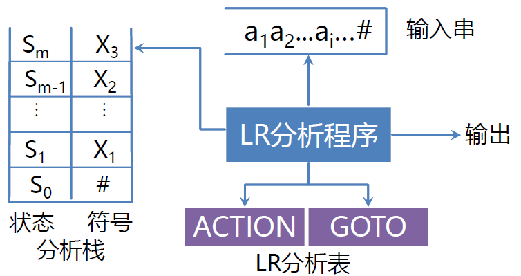
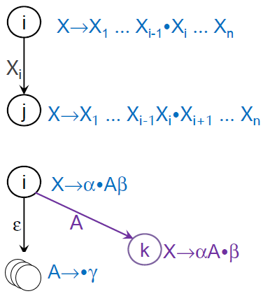
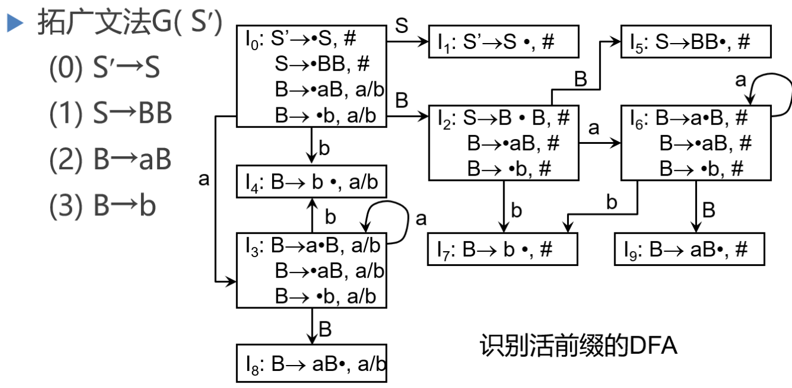
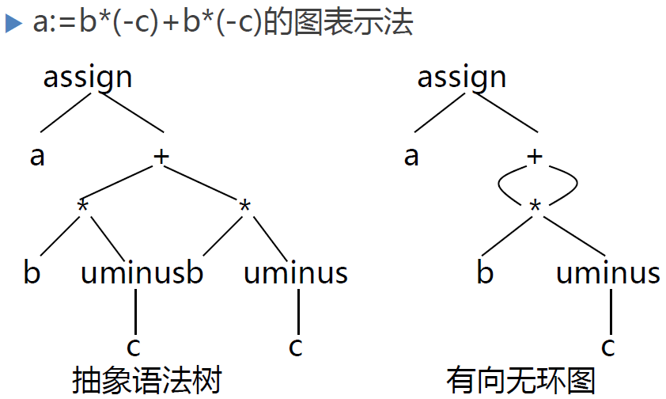
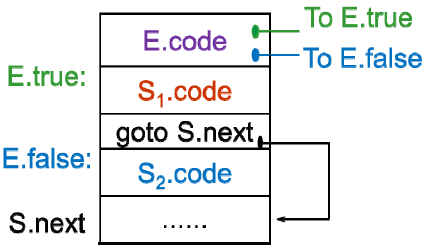

编译原理…
国科大的 PPT 真好看… i 了 i 了
第一章 引论
什么是编译程序
- 翻译程序(Translator)：把某一种语言程序(称为源语言程序)等价地转换成另一种语言程序(称为目标语言程序)的程序

编译程序(Compiler)：把某一种高级语言程序等价地转换成另一种低级语言程序(如汇编语言或机器语言程序)的程序
 * 运行编译程序的计算机：宿主机 * 运行目标程序的计算机：目标机 * 根据用途和侧重，编译程序可分为： 诊断编译程序(Diagnostic Compiler) 优化编译程序(Optimizing Compiler) 交叉编译程序(Cross Compiler)：编译程序产生不同于其宿主机的目标代码 可变目标编译程序(Retargetable Compiler：不需要重写编译程序中与机器无关的部分。
* 运行编译程序的计算机：宿主机 * 运行目标程序的计算机：目标机 * 根据用途和侧重，编译程序可分为： 诊断编译程序(Diagnostic Compiler) 优化编译程序(Optimizing Compiler) 交叉编译程序(Cross Compiler)：编译程序产生不同于其宿主机的目标代码 可变目标编译程序(Retargetable Compiler：不需要重写编译程序中与机器无关的部分。解释程序(Interpreter)：
- 把源语言写的源程序作为输入，但不产生目标程序，而是边解释边执行源程序

为什么要学习编译原理
理解计算系统，注意不是计算机系统。
设计计算系统
计算思维 Computational Thinking)
- 计算思维是运用计算机科学的基础概念去求解问题、设计系统和理解人类的行为，它包括了一系列广泛的计算机科学的思维方法
- 计算思维和阅读、写作和算术一样，是21世纪每个人的基本技能，而不仅仅属于计算机科学家
- 包括
抽象
自动化
问题分解
递归
权衡
保护、冗余、容错、纠错和恢复
利用启发式推理来寻求解答
在不确定情况下的规划、学习和调度
编译过程
词法分析
输入源程序字符串，扫描哪些字符构成了标识符，哪些字符构成了常数
依循的原则：构词规则
描述工具：有限自动机
1
2for i := 1 to 100 do
基本字 标识符 赋值号 整常数 基本字 整常数 基本字
语法分析
- 在词法分析的基础上，根据语法规则把单词符号串分解成各类 语法单位(语法范畴)，如下图得到了一棵语法树。
- 依循的原则：语法规则
- 描述工具：上下文无关文法
- 中间代码产生
- 对各类语法单位按语言的语义进行初步翻译
- 依循的原则：语义规则
- 描述工具：属性文法
- 中间代码：三元式、四元式，树，…
- 优化
- 对前阶段产生的中间代码进行加工变换，以期在最后阶段产生更高效的目标代码
- 依循的原则：程序的等价变换原则
- 比如下图的憨憨程序就可以被编译器优化得很优秀
- 目标代码产生
- 把中间代码变换成特定机器上的目标代码
- 依赖于硬件系统结构和机器指令的含义
- 目标代码三种形式
- 汇编指令代码: 需要进行汇编
- 绝对指令代码: 可直接运行
- 可重新定位指令代码: 需要链接
编译程序的结构
- 编译程序总框
出错处理
- 发现源程序中的错误，把有关错误信息报告给用户
- 语法错误
- 源程序中不符合语法（或词法）规则的错误
- 非法字符、括号不匹配、缺少；、…
- 语义错误
- 源程序中不符合语义规则的错误
- 说明错误、作用域错误、类型不一致、…
遍 (pass)
所谓的 “遍”，就是对源程序或源程序的中间表示从头到尾扫描一遍
编译程序的五个阶段，当然可以实现为五“遍”，也就是每个阶段都接受上一阶段的输出，然后完成本阶段的变换，生成本阶段完整的输出，每个阶段的输出都是源程序的一个完整表示，如一个完整的单词序列、一个完整的语法分析树、一个完整的中间代码表示、甚至是目标代码表示 等等
阶段与遍是不同的概念
一遍可以由若干段组成
在实际工作中，从程序效率和软件设计的角度考虑，我们往往会把若干联系非常紧密的阶段，合成一遍处理，比如说我们通常把词法分析、语法分析、中间代码生成这三个阶段合成一遍处理。
把词法分析和中间代码产生实现为一些子程序，也就是词法分析子程序或者是语义子程序，这两类子程序由语法分析模块来驱动或者调用。
在这个过程中，语法分析起主导作用，在语法分析的驱动下，词法分析 语法分析和中间代码生成三个阶段穿插进行，当词法分析完成最后一个单词的识别的时候，整个分析树也就很快得到了，同时所有的语法单位的翻译也就完成了，三个阶段合成一遍完成
一个阶段也可以分若干遍来完成
有些情况下一个阶段也可以分若干遍来实现，优化就是这样的例子，通常来说优化这个阶段被分成了很多遍，比如说 可以先对中间代码扫描一遍识别程序的基本结构，再扫描一遍完成简单的优化，再扫描一遍完成循环的优化，有时循环优化还有可能分成很多遍
编译前端和后端
- 编译前端
- 与源语言有关，如词法分析，语法分析，语义分析与中间代码产生，与机器无关的优化
- 编译后端
- 与目标机有关，与目标机有关的优化，目标代码产生
- 带来的好处
- 程序逻辑结构清晰
- 优化更充分，有利于移植
- 编译前端
编译程序的生成
工具：
以汇编语言和机器语言为工具
- 优点: 可以针对具体的机器，充分发挥计算机的系统功能；生成的程序效率高
- 缺点: 程序难读、难写、易出错、难维护、生产的效率低
以高级程序设计语言为工具
程序易读、易理解、容易维护、生产的效率高
 上图表示已经有了 I 这种高级语言的实现和编译器，用 I 语言实现将 S 语言编译为 T 语言的编译器
上图表示已经有了 I 这种高级语言的实现和编译器，用 I 语言实现将 S 语言编译为 T 语言的编译器
高级语言书写：
利用有的某种语言的编译程序实现另一种语言的编译程序
下图表示利用 P1 编译器，将 L1 语言写的 P2 编译器，编译成 A 代码写的 P2 编译器

移植方法：
- 把一种机器上的编译程序移植到另一种机器上，跨机器
自编译方式
- 你通过低级语言实现 L 语言的一部分 L1，然后拿 L1 和低级语言去实现 L1+L2，然后拿 L1+L2 去实现 L1+L2+L3，依次类推。
编译程序自动产生：
- 编译程序-编译程序，也叫编译程序产生器，也叫编译程序书写系统
- LEX：词法分析程序产生器
- YACC：语法分析程序产生器
第二章 高级程序设计语言定义与语法描述
程序设计语言的定义
语法：
一组规则，用它可以形成和产生一个合式 (well-formed) 的程序
词法规则：单词符号的形成规则
- 单词符号是语言中具有独立意义的最基本结构
- 一般包括：常数、标识符、基本字、算符、界符等
- 描述工具：有限自动机
语法规则：语法单位的形成规则
- 语法单位通常包括：表达式、语句、分程序、过程、函数、程序等;
- 描述工具：上下文无关文法
例子：
- $E\rightarrow i$：一个算术表达式可以由一个标识符构成；
- $E\rightarrow E+E$：一个算术表达式可由两个算术表达式（也叫子表达式）通过 ‘+’ 号连接构成；
- $E\rightarrow EE$：一个算术表达式可由两个算术表达式通过 ‘\‘（星号，而不特指乘号）号连接构成；
- $E\rightarrow (E)$：一个算术表达式外加括号，还是算术表达式；
语法规则和词法规则定义了程序的形式结构
定义语法单位的意义属于语义问题
语义：
- 一组规则，用它可以定义一个程序的意义
- 描述方法
- 自然语言描述
- 二义性、隐藏错误和不完整性
- 形式描述
- 操作语义
- 指称语义
- 代数语义
- 自然语言描述
程序，本质上是描述一定数据的处理过程；
程序语言的基本功能：描述数据和对数据的运算；
程序的层次结构：
静态绑定：发生在程序编译过程中间的绑定，包括变量声明、类型定义、函数定义
动态绑定：发生在程序运行过程中间的绑定，包括 C++ 中的多态性虚函数
表达式：
- 表达式由运算量（也称操作数，即数据引用或函数调用）和算符（运算符，操作符）组成
- 形式：中缀、前缀、后缀
赋值语句
- A := B
- 名字的左值：该名字代表的存储单元的地址
- 名字的右值：该名字代表的存贮单元的内容
- C 语言中，
a+5只有右值没有左值，因为该值只能用在赋值号右边
程序设计语言的描述
上下文无关文法
文法：
- 描述语言的语法结构的形成规则
- 如
He gave me a book.这句自然语言的文法规则为：
相关概念：
字母表：一个有穷字符集，记为 $\sum $
字母表中每个元素称为字符
$\sum$ 上的字（也叫字符串）是指由 $\sum$ 中的字符所构成的一个有穷序列
不包含任何字符的序列称为空字，记为 $\varepsilon $
用 $\sum^※$ 表示 $\sum$ 上的所有字的全体，包含空字 $ \varepsilon $
- 例如：设 $\sum = {a, b}$，则 $\sum^※ = {\varepsilon, a, b,aa,ab,ba,bb,aaa,\cdots }$
$\sum^※ $ 的子集 $U$ 和 $V$ 的连接（积）定义为 $UV = {\alpha \beta \ | \ \alpha \in U \and \beta \in V} $
- 例如：设 $U={a,aa}, V={b,bb}$，则 $UV ={ab,abb,aab,aabb}$，并且此时 $UV \not = VU $
$V$ 自身的 $n$ 次积记为 $V^n = \underbrace{V\cdots V}_{\text{n个}} $
$V^0={\varepsilon}$
$V^※ $ 是 $V$ 的闭包：$V^※ = V^0 \cup V^1\cup V^2\cup V^3\cup \cdots $
$V^+ $ 是 $V$ 的正规闭包： $V^+ = V V^※$
- 正规闭包与闭包的区别：如果 V 中原来没有空字，那么闭包有空字，正规闭包没空字
- 例如：设 $U={a,aa}$，那么 $U^※ = {\varepsilon ,a,aa,aaa,aaaa,\cdots }, U^+ = {a,aa,aaa,aaaa,\cdots }$
上下文无关文法：
上下文无关文法 $ G$ 是一个四元组 $G=(V_T,V_N,S,P) $，其中
- $V_T$：终结符 (Terminal) 集合 (非空)
- 不能再分解的
- $V_N$：非终结符 (Noterminal) 集合(非空)，且$V_T ∩ V_N=∅$
- 能再分解，比如上图中的 “主语”、”谓语”
- 非终结符可由终结符和非终结符构成
- $S$：文法的开始符号，$S∈V_N$
- 是一个特殊的非终结符，它代表所定义的语言最终感兴趣的语法单位
- 比如英语中的 “句子”，编程中的 “程序”
- $P$：产生式集合(有限)，每个产生式形式为
- $P→α， P∈V_N， α ∈ (V_T ∪ V_N)^※$
- 上式读成 “P 定义为 α”，即左边的终结符 P，是被定义的句法单位，右边的 α 是构成这个句法单位的一种组合。
- $(V_T ∪ V_N)$ 代表终结符和非终结符组成的字符集合，再打上 * 做闭包，代表该集合中的符号组成的字的全体
- 开始符 $S$ 至少必须在某个产生式的左部出现一次
- 例如，定义只含 +, * 的算术表达式的文法：G=< {i, +, *, (, )}, {E}, E, P >，其中，P 由下列产生式组成：
- $E\rightarrow i$
- $E\rightarrow E+E$
- $E\rightarrow E*E$
- $E\rightarrow (E)$
- $V_T$：终结符 (Terminal) 集合 (非空)
巴科斯范式：”->” 用 “::=” 来表示
上下文无关文法
- 约定 $\begin{cases}P\rightarrow \alpha_1 \ P\rightarrow \alpha_2\\cdots \ P\rightarrow \alpha_n\end{cases} \overset{缩写为}{\rightarrow} P\rightarrow \alpha_1 | \alpha_2 |\cdots |\alpha_n$
- 其中 “|” 读成 “或”，称 $\alpha_1$ 为 $P$ 的一个候选式
- 表示一个文法时，通常只给出开始符号和产生式
- 例如，定义只含 +, * 的算术表达式的文法可以缩写为：
$G(E) : E\rightarrow i \ |\ E+E \ | \ E*E\ |\ (E) $
文法与语言
推导：
定义：称 $\alpha A\beta$ 直接推出 $\alpha \gamma \beta$，即 $\alpha A\beta \Rightarrow \alpha \gamma \beta$ ，仅当 $A\rightarrow \gamma $ 是一个产生式，且 $\alpha, \beta \in (V_T\cup V_n)^※$
如果$α_1 \Rightarrow α_2 \Rightarrow … \Rightarrow α_n$，则我们称这个序列是从 $α_1$ 到 $α_n$ 的一个推导。若存在一个从 $α_1$ 到$α_n$ 的推导，则称 $α_1$ 可以推导出 $α_n $ 。
对文法 $G(E) : E\rightarrow i \ |\ E+E \ | \ E*E\ |\ (E) $，则 $E\Rightarrow (E)\Rightarrow (E+E)\Rightarrow (i+E)\Rightarrow (i+i)$
称 $\alpha_1 \overset{*}{\Rightarrow} \alpha_n$ 从 $\alpha_1$ 经过 0 步或若干步推出 $\alpha_n$
称 $\alpha_1 \overset{+}{\Rightarrow} \alpha_n$ 从 $\alpha_1$ 经过 1 步或若干步推出 $\alpha_n$
$\alpha_1 \overset{*}{\Rightarrow} \alpha_n$ 即 $\alpha=\beta$ 或 $ \alpha_1 \overset{+}{\Rightarrow} \alpha_n$
句型：
- 假定 G 是一个文法， S 是它的开始符号，如果 $S \overset{*}{\Rightarrow} \alpha_n$，则称 $\alpha$ 是一个句型
- $S \overset{*}{\Rightarrow} S$，所以 S 也是句型
句子：
- 仅含终结符号的句型是一个句子。
语言：
文法 G 所产生的句子的全体是一个语言，记为 $L(G)$
$L(G)= {\alpha \ | \ S \overset{+}{\Rightarrow}\alpha, \alpha \in V_T^※ }$，即 $L(G)$ 是由 $\alpha$ 构成的集合， $\alpha$ 属于终结符的闭包，且能由 S 推导得来。
语法树与二义性
最左推导和最右推导：
从一个句型到另一个句型的推导往往不唯一
$E+E \Rightarrow i+E \Rightarrow i+i \ E+E \Rightarrow E+i \Rightarrow i+i $最左推导：任何一步 $\alpha\Rightarrow \beta$ 都是对 $\alpha $ 中的最左非终结符进行替换
最右推导：任何一步 $\alpha\Rightarrow \beta$ 都是对 $\alpha$ 中的最右非终结符进行替换
语法树：
- 用一张图表示一个句型的推导，称为语法树
- 一棵语法树是不同推导过程的共性抽象
- 最左推导所对应的语法树的生长顺序是从上往下、从左往右
二义性 ambiguity：
文法的二义性：如果一个文法存在某个句子对应两棵不同的语法树，则说这个文法是二义的
G(E)： E → i|E+E|E*E|(E) 是二义文法，对于 $i*i +i$ 可以画出两棵语法树
语言的二义性：一个语言是二义的，如果对它不存在无二义的文法
- 对于语言 L，可能存在 G 和 G’，使得 L(G)=L(G’)=L，有可能其中一个文法为二义的，
另一个为无二义的
- 对于语言 L，可能存在 G 和 G’，使得 L(G)=L(G’)=L，有可能其中一个文法为二义的，
自然语言的二义性举例
John saw Mary in a boat
- 二义问题是不可判定问题，即不存在一个算法，它能在有限步骤内，确切地判定一个文法是否是二义的
- 可以找到一组无二义文法的充分条件
形式语言鸟瞰
- 乔姆斯基于1956年建立形式语言体系，他把文法分成四种类型：0，1，2，3型
- 与上下文无关文法一样，它们都由四部分组成，
但对产生式的限制有所不同
0 型（短语文法，图灵机）：
- 产生式形如：$\alpha \rightarrow \beta$
- 其中：$\alpha \in (V_T \cup V_N)^※ $ 且至少含有一个非终结符；$\beta \in(V_T\cup V_N)^※$
- 乔姆斯基文法体系中，最通用，也是描述能力最强、最一般的文法，产生式的约束最弱
1 型（上下文有关文法，线性界限自动机）:
- 产生式形如：$\alpha \rightarrow \beta$
- 其中：$|\alpha| \le |\beta|$，仅 $S\rightarrow \varepsilon $ 例外
- 上下文有关文法非常复杂，等下会提到
2 型(上下文无关文法，非确定下推自动机)：
- 产生式形如： $A → β$
- 其中：$A∈ V_N$；$β∈ (V_T ∪ V_N)^※$
3 型 (正规文法，有限自动机)
产生式形如： $A → αB $ 或 $A → α $，终结符要么没有要么出现在右式最右边（右线性文法
其中： $α∈ V_T^※$；$A，B∈V_N^※$
产生式形如： $A → Bα$ 或 $A → α$ （左线性文法
其中： $α∈ V_T^※$；$A，B∈V_N$
四种类型文法的描述能力：
$L_5={a^nb^n\ |\ n≥1}$ 不能由正规文法产生，但可由上下文无关文法产生
$G_5(S): S\rightarrow aSb \ | \ ab$$L_6={a^nb^nc^n|n≥1}$不能由上下文无关文法产生，但可由上下文有关文法产生
- 程序设计语言不是上下文无关语言，甚至不是上下文有关语言
- $L_7={αcα| α∈{a,b}^※}$不能由上下文无关文法产生，甚至连上下文有关文法也不能产生，只能由0型文法产生
- 标识符引用。比如编程语言中要求使用的变量必须前面声明过
- 过程调用过程中，“形-实参数的对应性”(如个数，顺序和类型一致性)
- 对于现今程序设计语言，在编译程序中，仍然采用上下文无关文法来描述其语言结构 （上下文无关文法的成熟高效）
第三章 词法分析
词法分析器的设计
词法分析器
词法分析的任务：
- 从左至右逐个字符地对源程序进行扫描，产生一个个单词符号
词法分析器 (Lexical Analyzer)：
- 扫描器(Scanner)
- 执行词法分析的程序
- 功能：输入源程序、输出单词符号
单词符号的种类：
- 基本字：如begin，repeat，for，…
- 标识符：用来表示各种名字，如变量名、数组名和过程名
- 常数：各种类型的常数
- 运算符：+，-，*，/，…
- 界符：逗号、分号、括号和空白
词法分析器的输出：
输出的单词符号的表示形式：
<单词种别， 单词自身的值>单词种别通常用整数编码表示
- 若一个种别只有一个单词符号，则种别编码就代表该单词符号。假定基本字、运算符和界符都是一符一种。
- 若一个种别有多个单词符号，则对于每个单词符号，给出种别编码和自身的值。
- 标识符单列一种；标识符自身的值表示成按机器字节划分的内部码
- 常数按类型分种；常数的值则表示成标准的二进制形式
词法分析器作为一个独立子程序：
- 词法分析作为一个独立的阶段
- 结构简洁、清晰和条理化，有利于集中考虑词法分
析一些枝节问题
- 结构简洁、清晰和条理化，有利于集中考虑词法分
- 但不一定不作为单独的一遍
- 将其处理为一个子程序
词法分析器的结构（分解的思想）：
扫描缓冲区，分成两个半区互补使用，一个半区也即单词的最大长度
超前搜索
超前搜索：
- 有些语言（FORTRAN）允许基本字作为标识符，比如 IF 作为数组名
- 这给基本字的识别带来麻烦：
IF(5.EQ.M)GOTO5 // 条件判断+跳转
IF(5)=55 // 给数组赋值 - 这需要超前搜索来确定基本字
- 标识符识别、常数识别算符、界符的识别
- 超前搜索又涉及到回退，十分麻烦
现代高级语言的几点限制 —— 不必使用超前搜索：
- 所有基本字都是保留字;用户不能用它们作自己的标识符
- 基本字作为特殊的标识符来处理，使用保留字表
- 如果基本字、标识符和常数(或标号)之间没有确定的运算符或界符作间隔，则必须使用一个空白符作间隔
状态转换图
状态转换图：
状态转换图是一张有限方向图
- 结点代表状态，用圆圈表示
- 状态之间用箭弧连结，箭弧上的标记(字符)代表射出结状态下可能出现的输入字符或字符类
- 一张转换图只包含有限个状态，其中有一个为初态，至少要有一个终态
状态转换图可用于识别 (或接受) 一定的字符串
- 若存在一条从初态到某一终态的道路，且这条路上所有弧上的标记符连接成的字等于 α，则称α 被该状态转换图所识别(接受)
状态转换图的实现：
- 变量
curState用于保存现有的状态 - 用二维数组表示状态图：
stateTrans[state][ch]
1 | curState = 初态 |
正规表达式与有限自动机
正规式和正规集
正规式和正规集：
正规集可以用正规式表示（正规式是表示正规集的一种方法）
程序设计语言定义的合法的单词的集合都是正规集，每个正规集可以抽象成正规式来表示
一个字集合是正规集当且仅当它能用正规式表示
正规式和正规集的递归定义：
对于给定的字母表 $\sum$
- $\varepsilon $ 和 $\O $ 都是 $\sum$ 上的正规式，它们所表示的正规集为 ${\varepsilon }$ 和 $\O$
任何 a $\in \sum$ ，a 是 $\sum$ 上的正规式，它所表示的正规集为 {a}
假定 $e_1$ 和 $e_2$ 都是 $\sum$ 上的正规式，它们所表示的正规集为 $L(e_1)$ 和 $L(e_2)$ ，则
- $(e_1|e_2)$ 为正规式，它所表示的正规集为 $L(e_1)\cup L(e_2)$
- $(e_1·e_2)$ 为正规式，它所表示的正规集为 $L(e_1) L(e_2)$ （两个正规集的连接还是正规集）
- $(e_1)^※$ 为正规式，它所表示的正规集为 $(L(e_1))^※$ （一个正规集的闭包还是正规集）
仅由有限次使用上述三步骤而定义的表达式才是 Σ 上的正规式，仅由这些正规式表示的字集才是Σ上的正规集。
正规集的等价性：
- 若两个正规式所表示的正规集相同，则称这两个正规式等价。如 b(ab)*=(ba)*b
正规式的性质：
- e1|e2 = e2|e1 交换律
- e1 |(e2|e3) = (e1|e2)|e3 结合律
- e1(e2e3) = (e1e2)e3 结合律
- e1(e2|e3) = e1e2|e1e3 分配律
- (e2|e3)e1 = e2e1|e3 e1 分配律
- eε = εe = e e1e2 <> e2e1
有限自动机
确定有限自动机
- 对状态图进行初始化定义 (描述)，得到
- 确定有限自动机 (Deterministic Finite Automata， DFA)
M 是一个五元式 $M=(S, \sum, f, S_0, F)$ 其中- S：有穷状态集
- $\sum$ ：输入字母表 (有穷)
- f ：状态转换函数，为 $S\times \sum \rightarrow S $ 的单值部分映射。
$f(s,a)=s’$ 表示当现行状态为 s，输入字符为 a 时，状态转移到 s’。 - $S_0 \in S$ 是唯一的一个初态
- $F\subseteq S$：终态集 (可空)
DFA表示为状态转换图
- 假定DFA M含有m个状态和n个输入字符
- 对应的状态转换图含有m个状态结点，每个结点顶多含有n条箭弧射出，且每条箭弧用Σ上的不同的输入字符来作标记
对于Σ*中的任何字α，若存在一条从初态到某一终态的道路，且这条路上所有弧上的标记符连接成的字等于α，则称α为DFA M所识别(接收)
DFA M所识别的字的全体记为L(M)
非确定有限自动机 （NFA）
定义：一个非确定有限自动机 (Nondeterministic Finite Automata, NFA) M
一个五元式 $M=(S, \sum, f, S_0, F)$ 其中- S：有穷状态集
- $\sum$ ：输入字母表 (有穷)
- f ：状态转换函数，为 $S\times \sum^※ \rightarrow 2^S $ 的部分映射
$f(S, \alpha)=S’$，识别 $\alpha$ （字、正规式都行）后转移到 S’ 这个状态集合中的某个状态 - $S_0 \subseteq S$ 是非空的初态集 （即初态可能不唯一）
- $F\subseteq S$：终态集 (可空)
非确定性：初始状态不唯一、识别一个字后所到达的后续状态不唯一
- 从状态图看 NFA 和 DFA 的区别
- NFA 可以有多个初态
- 弧上的标记可以是 Σ* 中的一个字(甚至可以是一个正规式)，而不一定是单个字符
- 同一个字可能出现在同状态射出的多条弧上
- DFA 是 NFA 的特例
有限自动机的等价性
DFA 与 NFA 的等价性
- 定义：对于任何两个有限自动机 M 和 M’，如果 L(M)=L(M’)，则称 M 与 M’ 等价
- 自动机理论中一个重要的结论：判定两个自动机等价性的算法是存在的
- 对于每个 NFA M 存在一个 DFA M’，使得 L(M)=L(M’)
- DFA 与 NFA 识别能力相同!
| NFA | DFA | |
|---|---|---|
| 初始状态 | 不唯一 | 唯一 |
| 弧上的标记 | 字 (单字符字、 $ \varepsilon $) | 字符 |
| 转换关系 | 非确定 | 确定 |
| 其他 | NFA 易于设计 | DFA 易于实现 |
NFA 转换为 DFA
假定 NFA $M=<S, \sum, \delta, S_0, F>$ ，我们对 M 的状态转换图进行以下改造
引进新的初态节点 X 和终态结点 Y，$X,Y\not\in S$，从 X 到 $S_0$ 中任意状态结点连一条 $\varepsilon$ 箭弧，从 F 中任意状态结点连一条 $\varepsilon $ 箭弧到 Y。(解决初始状态唯一性)
对 M 的状态转换图进一步施行替换，其中 k 是新引入的状态。(简化弧上的标记)
逐步把这个图转变为每条弧只标记为Σ上的一个字符或ε，最后得到一个NFA M’，显然 L(M’)=L(M)
NFA 确定化 —— 子集法 (解决 $\varepsilon $ 弧和转换关系)
设 I 是状态集的一个子集，定义 I 的 $\varepsilon $ 闭包 $\varepsilon\text{-closure(I)} $ 为：
- 若 $s\in I$，则 $s\in \varepsilon\text{-closure(I)} $
- 若 $s\in I$，则从 s 出发经过任意条 $\varepsilon $ 弧而能到达的任何状态 s’ 都属于 $\varepsilon\text{-closure(I)} $
- 即 $\varepsilon\text{-closure(I)} = I \cup {s’ | \text{从某个s}\in I \text{出发经过任意条}\varepsilon 弧能到达s’ }$
设 a 是 $\sum$ 中的一个字符，定义 $I_a = \varepsilon\text{-closure(J)}$
其中 J 为 I 中的某个状态出发经过一条 a 弧而到达的状态集合
确定化：不失一般性，设字母表只包含两个 a 和b，我们构造一张计算状态集的转换表

首先，置 表(1,1) 为 $ \varepsilon\text{-closure({X})}$ 求出这一列的 $I_a, I_b$
然后，检查这两个 $I_a, I_b$，看它们是否已在表中的第一列中出现，把未曾出现的填入后面的空行的第 1 列，求出每行第 2, 3 列上的集合…
重复上述过程。例子如下图
经过确定化，得到了状态集之间的关系（状态集的转换表）
哦，状态集还可以编号，以免写的太麻烦
把经过确定化得到的表看作 状态转换矩阵，子集视为状态
- 转换表唯一刻画了一个确定的有限自动机 M
初态是 $ \varepsilon\text{-closure({X})}$
终态是 含有原终态 Y 的子集 - 不难看出，这个 DFA M 与 M’ 等价
- 对于每个 NFA M 存在一个 DFA M’，使得 L(M)=L(M’)
- 转换表唯一刻画了一个确定的有限自动机 M
DFA 的化简
—— 状态的等价性
DFA 的化简(最小化)：对于给定的 DFA M，寻找一个状态数比 M 少的 DFA M’，使得 L(M)=L(M’)
状态的等价性
- 假设 s 和 t 为 M 的两个状态，称 s 和 t 等价：
如果从状态出发能读出某个字 α 而停止于终态，那么同样，从t 出发也能读出 α 而停止于终态（两个终态可以不是同一个）
反之亦然。 - 两个状态不等价，则称它们是可区别的
- 假设 s 和 t 为 M 的两个状态，称 s 和 t 等价：
基本思想
把 M 的状态集划分为一些不相交的子集，使得任何两个不同子集的状态是可区别的，而同一子集的任何两个状态是等价的。(不断地不断地细分)
最后，让每个子集选出一个代表，同时消去其他状态。

举例，按照上述原则对DFA的状态集合S进行第一次划分，正确的分法是（B. 终态和非终态）
- 可以 $\varepsilon$ 为例，终态识别 $\varepsilon$ 后仍为终态，非终态识别 $\varepsilon$ 后仍为非终态
化简算法 —— 最小化算法
推导
首先把 S 划分为终态和非终态两个子集，形成基本划分 $\prod $
假定状态 s1 和 s2 是I(i)={s1,s2, …,sk}中的两个状态，它们经 α 弧分别到达 t1 和 t2，而 t1和 t2 属于现行 Π 中的两个不同子集
说明有一个字 α， t1 读出 α 后到达终态，而 t2 读出 α 后不能到达终态，或者反之
那么对于字 aα ， s1 读出 aα 后到达终态，而 t2 读出 aα 不能到达终态，或者反之
所以 s1 和 s2 不等价
所以可以将 $I^{(i)}$ 分成两半，一半含有 s1，一半含有 s2
广义上的算法
- 对某个 a 和 $I^{(i)}$，若 $I_a^{(i)}$ 落入现行 Π 中 N 个不同子集，则应把 $I^{(i)}$ 划分成 N 个不相交的组，使得每个组 J 的 $J_a$ 都落入的 Π 同一子集。
- 重复上述过程，直到 Π 所含子集数不再增长
- 选取每个子集 I 中的一个状态代表其他状态，则可得到化简后的 DFA M’
举例

$I^{(1)}={0,1,2}、I^{(2)}={3,4,5,6}$
对于 $I^{(1)}={0,1,2}$，有 $I_a^{(1)}={1,3}$，所以 0,2 要和 1 分开，即得到
$I^{(11)}={0,2}、I^{(12)}={1}$对于 $I^{(11)}={0,2}$，有 $I_a^{(11)}={1}、I_b^{(11)}={2,4}$，所以 0 要和 2 分开
$I^{(111)}={0}、I^{(112)}={2}$而对于 $I^{(2)}={3,4,5,6}$，有 $I_a^{(2)}={3,6}、I_b^{(2)}={4,5}$ 都在 $I^{(2)}$ 里，故不需要分
最终为：$I^{(111)}={0}、I^{(112)}={2}、I^{(12)}={1}、I^{(2)}={3,4,5,6}$
缩写为：{0}{1}{2}{3,4,5,6}
{3,4,5,6} 可以选出 3 作代表，结果如下
正规式与有限自动机的等价性
正规式与有限自动机的等价性
- 一个正规式 r 与一个有限自动机 M 等价
- L(r) = L(M)，即正规式对应的正规集 = 有限自动机所识别的字的整体
- FA -> 正规式（FA 转正规式）
- 对任何 FA M，都存在一个正规式 r，使得 L(r) = L(M)
- 正规式 -> FA（正规式转 FA）
- 对于任何正规式 r，都存在一个 FA M，使得 L(M)=L(r)
为 NFA 构造正规式
为了证明正规式与有限自动机的等价性，我们先拓展状态转换图的概念，令每条弧可用一个正规式
作标记。弧上的 r 指：识别了 r 这个正规式对应的正规集中的某个字
定理：对于 ∑ 上任一 NFA M，都存在一个 ∑ 上的正规式 r ，使得 L(r) = L(M)
假定 NFA M，我们对 M 状态转换图做以下改造：
在 M 的转换图上加进两个状态 X 和 Y，X 用 ε 弧连所有初态节点，所有终态节点用 ε 弧连 Y
反复运用下图三条规则，逐步消去节点，直到只剩下 X 和 Y
最后，X 到 Y 的弧上标记的正规式即为所构造的正规式 r
得证：对 Σ 上任一 NFA M，都存在一个 Σ 上的正规式 r，使得 L(r)=L(M)
为正规式构造 NFA
对给定正规式r中的运算符数目进行归纳
- 验证r中的运算符数目为0时，结论成立。
- 假设结论对于运算符数目少于k(k≥1)的正规式成立
- 基于该假设，证明结论对于运算符数目为k的正规式成立。
当r具有零个运算符，则r=ε或r=φ或r=a，其中a∈Σ。
当r中含有k个运算符时，r有三种情形：
证明过程中的形式化描述被省略了，可以看PPT
转换算法，构造Σ上的NFA M’ 使得L(r)=L(M’)：
- 首先，把r表示成

- 按下面的三条规则对r进行分裂
- 逐步把这个图转变为每条弧只标记为Σ上的一个字符或ε，最后得到一个NFA M’，显然L(M’)=L(r)
NFA 还可以转换为 DFA。 DFA 再经过最小化可以得到一个化简的 DFA。
词法分析器的自动产生 —— LEX
LEX的工作过程
- 对每条识别规则 Pi 构造一个相应的非确定有限自动机 Mi；
- 引进一个新初态 X，通过 ε 弧，将这些自动机连接成一个新的 NFA；
- 把 M 确定化、最小化，生成该 DFA 的状态转换表和控制执行程序
第四章 语法分析-自上而下
语法分析基本概念
语法分析的任务
语法分析的任务：分析一个文法的句子的结构
语法分析器的功能：按照文法的产生式 (语言的语法规则)，识别输入符号串是否为一个句子 (合式程序)
语法分析器在编译器中的地位
语法分析的方法
自下而上：
- 从输入串开始，逐步进行归约，直到文法的开始符号
- 归约：根据文法的产生式规则，把串中出现的产生式的右部替换成左部符号
- 从树叶节点开始，构造语法树
- 算符优先分析法、LR 分析法
自上而下：
- 从文法的开始符号出发，反复使用各种产生式，寻找”匹配”的推导
- 推导：根据文法的产生式规则，把串中出现的产生式的左部符号替换成右部
- 从树的根开始，构造语法树
- 常用方法：递归下降分析法、预测分析程序
自上而下分析的基本问题
文法左递归问题
- 一个文法是含有左递归的，如果存在非终结符 P
直接左递归的消除
假定 P 关于的全部产生式是 $\begin{align}\mathrm{P} \rightarrow \mathrm{P} \alpha_{1}\left|\mathrm{P} \alpha_{2}\right| \ldots\left|\mathrm{P} \alpha_{\mathrm{m}}\right| \beta_{1}\left|\beta_{2}\right| \ldots | \beta_{\mathrm{n}}\end{align}$
左递归变右递归：$\begin{align}\begin{array}{c}
\mathrm{P} \rightarrow \beta_{1} \mathrm{P}^{\prime}\left|\beta_{2} \mathrm{P}^{\prime}\right| \ldots\left|\beta_{\mathrm{n}} \mathrm{P}^{\prime}\right| \
\mathrm{P}^{\prime} \rightarrow \alpha_{1} \mathrm{P}^{\prime}\left|\alpha_{2} \mathrm{P}^{\prime}\right| \ldots\left|\alpha_{\mathrm{m}} \mathrm{P}^{\prime}\right| \varepsilon
\end{array}\end{align}$
例题：
间接左递归的消除
基本思路：把候选中开头的非终结符替换成它的定义，逐步减少定义的圈中的结点，最后变成一个自圈，然后打破定义上的圈
消除左递归的算法
- 把文法 G 的所有非终结符按任一种顺序排列 $P_1，P_2，\cdots，P_n$
- FOR i:=1 TO n DO
FOR j:=1 TO i-1 DO 把形如 $P_i \rightarrow P_j \gamma$ 的规则改写成 $P_i \rightarrow \delta_1 \gamma | \delta_2 \gamma|\cdots|\delta_k \gamma $ （其中 $P_j \rightarrow \delta_1 | \delta_2|\cdots|\delta_k$） 消除关于 $P_i$ 规则的直接左递归性 - 化简由 2 所得的文法，去除从开始符号出发永远无法到达的非终结符的产生规则
习题：消除文法 G(s) 的左递归 $\begin{align}\begin{aligned}
&S \rightarrow Q c | c\
&Q \rightarrow R b | b\
&R \rightarrow S a | a
\end{aligned}\end{align}$
- 排序 R、Q、S （不同的排序产生的文法是等价的）
- 先看 R，$R \rightarrow Sa|a$，其中 S 排在 R 的后面，没关系
- 再看 Q，$Q\rightarrow Rb|b$，其中 R 排在 Q 的前面，对其进行替换 $Q\rightarrow Sab|ab | b$
此时文法变为 $\begin{align}\begin{aligned}
&S \rightarrow Q c | c\
&Q\rightarrow Sab|ab | b\
&R \rightarrow S a | a
\end{aligned}\end{align}$ - 再看 S，$S \rightarrow Q c | c$ ，其中 Q 排在 S 的前面，对其进行替换 $S \rightarrow Sabc|abc|bc|c $
出现了直接左递归，消除掉 $\begin{align}\begin{aligned}
&S \rightarrow abcS’|bcS’|cS’\ & S’ \rightarrow abcS’ | \varepsilon \
\end{aligned}\end{align}$ - 此时文法为 $\begin{align}\begin{aligned}
&S \rightarrow abcS’|bcS’|cS’\ & S’ \rightarrow abcS’ | \varepsilon \
&Q\rightarrow Sab|ab | b\
&R \rightarrow S a | a
\end{aligned}\end{align}$，消除掉从开始符号出发永远无法到达的非终结符的产生规则 - $\begin{align}\begin{aligned}
&S \rightarrow abcS’|bcS’|cS’\ & S’ \rightarrow abcS’ | \varepsilon \
\end{aligned}\end{align}$
回溯问题
- 分析过程中，当一个非终结符用某一个候选匹配成功时，这种匹配可能是暂时的
- 出错时，不得不“回溯”
消除回溯
为了消除回溯必须保证：
- 对文法的任何非终结符，当要它去匹配输入串时，能够根据它所面临的输入符号准确地指派它的一个候选去执行任务，并且此候选的工作结果应是确信无疑的。
FIRST 集合
- 令 G 是一个不含左递归的文法，对G的所有非终结符的每个候选 α 定义它的终结首符集 FIRST(α) 为：
$$
F I R S T(\alpha)=\left{a | \alpha \overset{\*}{\Rightarrow} a \cdots, a \in V_{T}\right}
$$
特别是，若 $\alpha \overset{\*}{\Rightarrow} \varepsilon$，则规定 $\varepsilon \in F I R S T(\alpha)$
如果非终结符 A 的所有候选首符集两两不相交，即 A 的任何两个不同候选 αi 和 αj，$\begin{align}\mathrm{FIRST}\left(\alpha_{i}\right) \cap \mathrm{FIRST}\left(\alpha_{j}\right)=\phi\end{align} $
当要求 A 匹配输入串时，A 能根据它所面临的第一个输入符号 a，准确地指派某一个候选去执行任务。这个候选就是那个终结首符集含 a 的 α。
提取公共左因子：
假定关于 A 的规则是 $\begin{align}A \rightarrow \delta \beta_{1}\left|\delta \beta_{2}\right| \ldots\left|\delta \beta_{n}\right| \gamma_{1}\left|\gamma_{2}\right| \ldots | \gamma_{m}\end{align}$
那么，可以把这些规则改写成 $\begin{align}\begin{array}{c}
A \rightarrow \delta A^{\prime}\left|\gamma_{1}\right| \gamma_{2}|\ldots| \gamma_{m} \
A^{\prime} \rightarrow \beta_{1}\left|\beta_{2}\right| \ldots | \beta_{n}
\end{array}\end{align}$经过反复提取左因子，就能够把每个非终结符(包括新引进者)的所有候选首符集变成为两两不相交
FOLLOW 集合
如果一个非终结符 A ，有多个候选，当面临着输入符号 a 要用 A 去匹配的时候，如果这个 a 又不在任何一个候选的首符集里面，但是，有一个候选是 $\varepsilon $ 。当前如果 a 在某个句型中能够跟在 A 的后面时，才能选择 A 的 $\varepsilon $ 去匹配这个 A。
假定S是文法G的开始符号，对于G的任何非终结符A，我们定义A的FOLLOW集合
$$
\begin{align}F O L L O W(A)=\left{a | S \overset{\}{\Rightarrow} \cdots A a \cdots, a \in V_{T}\right}\end{align*}
$$
特别是，若 $S \overset{\*}{\Rightarrow} \cdots A$，则规定 $# \in F O L L O W(A)$
现在表述改为：当 a 要扩展 A 时，a 不出现在任何候选的 FIRST 集合里，而且有个 $\varepsilon $ 候选，如果 a 在 A 的 FOLLOW 集合里面，就把 A 替换成 $\varepsilon $ 。
LL(1)文法
LL(1)文法的条件
构造不带回溯的自上而下分析的文法条件：
文法不含左递归
对于文法中每一个非终结符A的各个产生式的候选首符集两两不相交。
即，若 $A \rightarrow \alpha_{1}\left|\alpha_{2}\right| \dots | \alpha_{n}$，则 $FIRST \left(\alpha_{i}\right) \cap \operatorname{FIRST}\left(\alpha_{j}\right)=\phi$对文法中的每个非终结符A，若它存在某个候选首符集包含ε，则 $\text{FIRST(A)} \cap \text{FOLLOW(A)}=\phi, \quad i=1,2, \dots, n$
如果一个文法 G 满足以上条件，则称该文法为 LL(1) 文法
- L：从左到右扫描输入串
- L：最左推导
- 1：每一步只需向前查看一个符号
LL(1)分析法
- 对于 LL(1) 文法，可以对其输入串进行有效的无回溯的自上而下分析
- 假设要用非终结符 A 进行匹配，面临的输入符号为 a，A 的所有产生式为
$A \rightarrow \alpha_{1}\left|\alpha_{2}\right| \dots | \alpha_{n}$- 若 $a \in F IRST\left(\alpha_{i}\right)$，则指派 $\alpha_i$ 执行匹配任务；
- 若 a 不属于任何一个候选首符集，则
(1) 若 ε 属于某个 FIRST(αi ) 且 a∈FOLLOW(A)， 则让 A 与 ε 自动匹配。
(2) 否则，a 的出现是一种语法错误。
FIRST 集和 FOLLOW 集的构造
思想：把对无穷推导空间的可能的考察，转换成对有限产生式的反复扫描
构造 FIRST(α)
$$
F I R S T(\alpha)=\left{a | \alpha \overset{\*}{\Rightarrow} a \cdots, a \in V_{T}\right}
$$
- 文法符号：$\alpha=X, \quad X \in V_{T} \cup V_{N}$
- 符号串：$\alpha=X_{1} X_{2} \ldots X_{n}, \quad X_{i} \in V_{T} \cup V_{N}$
构造每个文法符号的 FIRST 集合：
- 对每一 $X \in V_{T} \cup V_{N}$，连续使用下面的规则，直至每个集合 FIRST 不再增大为止：
- 若 $X \in V_{T}$，则 $F IRST(X)={X}$
- 若 $X \in V_{N}$，且有产生式 $X\rightarrow a \cdots$，则把 a 加入到 $F IRST(X)$ 中；
若 $X\rightarrow \varepsilon$ 也是一条产生式，则把 $\varepsilon$ 也加到 $F IRST(X)$ 中 - 若 $X\rightarrow Y \cdots$ 是一个产生式且 $Y\in V_N$ ，则把 $F IRST(Y)$ 中的所有非 $\varepsilon$ 也加到 $F IRST(X)$ 中
- 若 $X \rightarrow Y_{1} Y_{2} \ldots Y_{i-1} Y_{i} \ldots Y_{k}$ 是一个产生式，$Y_{1}, Y_{2} ,\cdots ,Y_{i-1}$ 都是非终结符
- 对于任何 j，$1 \leq j \leq i-1$，$FIRST \left(Y_{j}\right)$ 都含有 $\varepsilon$ （$Y_{1} \cdots Y_{i-1} \overset{\*}{\Rightarrow} \varepsilon$），则把 $FIRST \left(Y_{i}\right)$ 中的所有非 $\varepsilon$ 也加到 $FIRST(X)$ 中
- 若所有的 $FIRST \left(Y_{j}\right)$ 都含有 $\varepsilon$ ，j=1,2,…,k，则把 $\varepsilon$ 加到 $FIRST(X)$ 中
构造任何符号串的 FIRST 集合：
- 对文法 G 的任何符号串 $\alpha=X_{1} X_{2} \cdots X_{n}$ 构造集合 $FIRST \left(\alpha\right) $
- 置 $\mathrm{FIRST}(\alpha)=\mathrm{FIRST}\left(\mathrm{X}_{1}\right) \backslash{\varepsilon}$，斜杠表示集合去掉某个元素
- 若对任何 $1 \leq j \leq i-1 $ ，$\varepsilon \in \mathrm{FIRST}\left(\mathrm{X}{\mathrm{j}}\right)$，则把 $\mathrm{FIRST}\left(\mathrm{X}{i}\right) \backslash{\varepsilon}$ 加至 $\mathrm{FIRST}(\alpha)$ 中；
特别是，若所有的 $ \mathrm{FIRST}\left(\mathrm{X}_{\mathrm{j}}\right)$ 都含 $\varepsilon$ （$1 \leq j \leq n$），则把 $\varepsilon$ 也加至 $\mathrm{FIRST}(\alpha)$ 中。
显然，若 $\alpha = \varepsilon$ 则 $\mathrm{FIRST}(\alpha)={\varepsilon }$
构造 FOLLOW(A)
$$
\begin{align}F O L L O W(A)=\left{a | S \overset{\}{\Rightarrow} \cdots A a \cdots, a \in V_{T}\right}\end{align*}
$$
构造每个非终结符的 FOLLOW 集合：
- 对于文法 G 的每个非终结符 A 构造 FOLLOW(A) 的办法是，连续使用下面的规则，直至每个 FOLLOW 不再增大为止：
- 对于文法的开始符号 S，置＃于 FOLLOW(S) 中；
- 若 A→αBβ 是一个产生式，则把 FIRST(β)\{ε} 加至 FOLLOW(B) 中；
- 若（ A→αB 是一个产生式）或（ A→αBβ 是一个产生式而 ε ∈ FIRST(β) ），则把 FOLLOW(A) 加至 FOLLOW(B) 中
例题：
递归下降分析程序
概念：
- 分析程序由一组子程序组成， 对每一语法单位(非终结符)构造一个相应的子程序，识别对应的语法单位
- 通过子程序间的相互调用实现对输入串的识别
- 例如，A → B c D
- 文法的定义通常是递归的，通常具有递归结构
定义全局过程和变量：
- ADVANCE，把输入串指示器IP指向下一个输入符号，即读入一个单词符号
- SYM，IP当前所指的输入符号
- ERROR，出错处理子程序
例子：
例子：$\begin{align}\begin{aligned}
&E \rightarrow T E^{\prime}\
&E^{\prime} \rightarrow+T E^{\prime} | \varepsilon\
&T \rightarrow F T^{\prime}\
&T^{\prime} \rightarrow \text{} F T^{\prime} | \varepsilon\
&F \rightarrow(E) | i
\end{aligned}\end{align*}$ 的递归下降子程序为
扩充的巴科斯范式
在元符号“→”或“::=”和“|”的基础上，扩充几个元语言符号：
- 用花括号 {α} 表示闭包运算 α*。
- 用表示 ${α}_0^n$ 可任意重复 0 次至 n 次。
- 用方括号 [α] 表示 ${α}_0^1$ ，即表示 α 的出现可有可无 (等价于 α|ε )。
例如，通常的 “实数” 可定义为：
Decimal→ [Sign]Integer.{digit}[Exponent]
Exponent→ E[Sign]Integer
Integer→ digit{digit}
Sign→ + | -
用扩充的巴科斯范式来描述语法，直观易懂，便于表示左递归消去和因子提取。
例如，$\begin{align}\begin{aligned}
&E \rightarrow T | E+T\
&T \rightarrow F | T^{\star} F\
&F \rightarrow i |(E)
\end{aligned}\end{align} $ 可表示成 $\begin{align}\begin{aligned}
&E \rightarrow T{+T}\
&T \rightarrow F{\star F}\
&F \rightarrow i |(E)
\end{aligned}\end{align} $，其语法图和递归下降子程序如下
预测分析程序
预测分析程序构成
- 总控程序，根据现行栈顶符号和当前输入符号，执行动作
- 分析表 $M[A，a]$ 矩阵，$A ∈ V_N ，a ∈ V_T$ 是终结符或 ‘＃’
- 分析栈 STACK 用于存放文法符号
预测分析过程
总控程序根据当前栈顶符号X和输入符号a，执行下列三动作之一：
- 若 X＝a＝‘＃’，则宣布分析成功，停止分析。
- 若 X＝a ≠‘＃’，则把 X 从 STACK 栈顶逐出，让 a 指向下一个输入符号。
- 若 X 是一个非终结符，则查看分析表 M。
- 若 M[X，a] 中存放着关于 X 的一个产生式，把 X 逐出 STACK 栈顶，把产生式的右部符号串按反序一一推进 STACK 栈 (若右部符号为ε ，则意味不推什么东西进栈)。
- 若 M[X，a] 中存放着“出错标志”，则调用出错诊察程序 ERROR。
1 | BEGIN |
例子：对于 $\begin{align}\begin{aligned}
&E \rightarrow T | E+T\
&T \rightarrow F | T^{\star} F\
&F \rightarrow i |(E)
\end{aligned}\end{align} $ ，输入串为 $i_1* i_2+i_3$ ，利用分析表进行预测
预测分析表的构造
分析表 M[A，a] 的构造：
- 构造 FIRST(α) 和 FOLLOW(A)
- 构造分析表 M[A，a]
构造 G 的分析表 M[A，a]， 确定每个产生式A→α在表中的位置：
- 对文法 G 的每个产生式 A→α 执行第 2 步和第 3 步；
- 对每个终结符 a∈FIRST(α)，把 A→α 加至 M[A，a] 中；
- 若 ε∈FIRST(α)，则对任何 b∈FOLLOW(A) 把 A→α 加至 M[A，b] 中。
- 把所有无定义的 M[A，a] 标上“出错标志”。
LL(1)文法与二义性
- 如果 G 是左递归或二义的，那么，M 至少含有一个多重定义入口。因此，消除左递归和提取左因子将有助于获得无多重定义的分析表 M。
- 可以证明，一个文法 G 的预测分析表 M 不含多重定义入口，当且仅当该文法为 LL(1) 的。
- LL(1) 文法不是二义的。
第五章 语法分析-自下而上
基本概念
语法分析的方法
自下而上：
- 从输入串开始，逐步进行归约，直到文法的开始符号
- 归约：根据文法的产生式规则，把串中出现的产生式的右部替换成左部符号
- 从树叶节点开始，构造语法树
- 算符优先分析法、LR 分析法
自上而下：
- 从文法的开始符号出发，反复使用各种产生式，寻找”匹配”的推导
- 推导：根据文法的产生式规则，把串中出现的产生式的左部符号替换成右部
- 从树的根开始，构造语法树
- 常用方法：递归下降分析法、预测分析程序
自下而上分析示例
自下而上分析的基本思想
- 采用 “移进－归约” 思想进行自下而上分析
- 基本思想
- 用一个寄存符号的先进后出栈，把输入符号一个一个地移进到栈里，当栈顶形成某个产生式的候选式时，即把栈顶的这一部分替换成(归约为)该产生式的左部符号。
移进－归约分析示例
设文法G(S)：
(1) S → aAcBe
(2) A → b
(3) A → Ab
(4) B → d
试对 abbcde 进行 “移进－归约” 分析
自下而上分析过程：边输入单词符号，边归约
核心问题：识别可归约串
分析树和语法树不一定一致
短语
定义：令 G 是一个文法，S 是文法的开始符号，假定 αβδ 是文法 G 的一个句型，如果有 $\large \mathrm{S} \overset{*}{\Rightarrow} \alpha \mathrm{A} \delta \ \ \text{且}\ \ \mathrm{A} \overset{+}{\Rightarrow} \beta $，则 β 称是句型 αβδ 相对于非终结符 A 的短语。
如果有 $A\rightarrow β$，则称 β 是句型 αβδ 相对于规则 A→ β的直接短语。（一步推出则短语是直接短语）
例子：
考虑文法 G(E)：
E → T | E+T
T → F | T*F
F → (E) | i
和句型 i1*i2+i3：短语：i1，i2，i3， i1*i2， i1*i2+i3
直接短语：i1，i2，i3
在一个句型对应的语法树中
- 以某非终结符为根的两代以上的子树的所有末端结点从左到右排列就是相对于该非终结符的一个短语
- 如果子树只有两代，则该短语就是直接短语
算符优先文法
按照算符的优先关系和结合性质进行语法分析
适合分析表达式
算符优先级
下图中两个文法，左文法没有体现先乘除后加减同级从左到右的约定。右文法的非终结符的定义关系中，进一步体现了算符在规约上的优先关系。
优先关系
- 任何两个可能相继出现的终结符 a 与 b 可能三种优先关系
- $a\lessdot b$，a的优先级低于b
- $a \eqcirc b$，a的优先级等于b
- $a \gtrdot b$，a的优先级高于b
- 算符优先关系与数学上的 <>= 不同
- $+ \lessdot +$
- $a \lessdot b$，并不意味着 $b \gtrdot a$，如 $(\ \lessdot +$ 和 $+ \lessdot\ ($
算符文法
- 概念：一个文法，它的任一产生式的右部都不含两个相继 (并列) 的非终结符，即不含 …QR… 形式的产生式右部
- 约定：
- a、b 代表任意终结符
- P、Q、R 代表任意非终结符
- ‘…’ 代表由终结符和非终结符组成的任意序列，包括空字
算符优先文法
假定 G 是一个不含 ε-产生式的算符文法。对于任何一对终结符 a、b，我们说：
- $a \eqcirc b$ ，当且仅当文法 G 含有形如 P→…ab… 或 P→…aQb… 的产生式
- $a \lessdot b$ ，当且仅当文法 G 含有形如 P→…aR… 的产生式 ，而 $R\overset{+}{\Rightarrow} b…$ 或 $R\overset{+}{\Rightarrow} Rb…$
- $a \gtrdot b$ ，当且仅当文法 G 含有形如 P→…Rb… 的产生式 ，而 $R\overset{+}{\Rightarrow} a…$ 或 $R\overset{+}{\Rightarrow} aQ…$
如果一个算符文法 G 中的任何终结符对 (a, b) 至多只满足 $a \eqcirc b、a \lessdot b、a \gtrdot b$ 这三个关系之一，则称 G 是一个算符优先文法
优先关系表
考虑下面的文法G(E)：
(1) E→E+T | T
(2) T→T*F | F
(3) F→P ↑ F | P
(4) P→(E) | i根据优先关系的定义，可以计算优先关系如下
- 将所有的优先关系用一个 n×n 的表格表示，(1, 1) 这个格子表示左边的加号优先级高于右边的加号
优先关系表的前提
确定满足关系 $a \eqcirc b$ 的所有终结符对
- $a \eqcirc b$，当且仅当文法G中含有形如 P→…ab… 或 P→…aQb… 的产生式
- 通过检查 G 的每个产生式的每个候选式，可找出所有满足 $a \eqcirc b$ 的终结符对
- 只要检查产生式，无需考虑推导，就能计算所有可能的优先级相等关系
确定满足关系 $\lessdot、\gtrdot$ 的所有终结符对
- $a \lessdot b$ ，当且仅当文法 G 含有形如 P→…aR… 的产生式 ，而 $R\overset{+}{\Rightarrow} b…$ 或 $R\overset{+}{\Rightarrow} Rb…$
- $a \gtrdot b$ ，当且仅当文法 G 含有形如 P→…Rb… 的产生式 ，而 $R\overset{+}{\Rightarrow} a…$ 或 $R\overset{+}{\Rightarrow} aQ…$
FIRSTVT 集：$FIRSTVT(P) = {a\ |\ P \overset{+}{\Rightarrow}a…或P \overset{+}{\Rightarrow}Qa…，a\in V_T 且 Q\in V_N }$
LASTVT 集：$LASTVT(P) = {a\ |\ P \overset{+}{\Rightarrow}…a或P \overset{+}{\Rightarrow}…aQ，a\in V_T 且 Q\in V_N }$
构造集合FIRSTVT(P)的算法
反复使用下面两条规则构造集合 FIRSTVT(P)
- 若有产生式P→a…或P→Qa…，则a∈FIRSTVT(P)
- 若a∈FIRSTVT(Q)，且有产生式P→Q…，则a∈FIRSTVT(P)
算法的一种实现（利用栈）：
1 | PROCEDURE INSERT(P，a) |
构造集合LASTVT(P)的算法
反复使用下面两条规则构造集合 LASTVT(P)
- 若有产生式P→… a或P→ … aQ，则a∈LASTVT(P)
- 若a∈LASTVT(Q)，且有产生式P→… Q，则a∈LASTVT(P)
构造优先关系表的算法：
示例：
是算符优先文法，因为表里没有冲突项，任何一对终结符之间最多只有一种优先关系。
最左素短语
概念：
- 素短语：一个文法 G 的句型的素短语是指这样一个短语，它至少含有一个终结符，并且，除它自身之外不再含任何更小的素短语
- 最左素短语：处于句型最左边的那个素短语
示例：
- 语法树可以看出短语和素短语，但是我们没有语法树，语法分析的结果是分析树，检测短语和素短语是语法分析的过程，所以要有其他的方法来检测短语和素短语。
最左素短语定理：
算符优先文法句型(括在两个＃之间)的一般形式：
$#N_1a_1N_2a_2…N_na_nN_{n+1}#$
其中，ai 都是终结符，Ni是可有可无的非终结符。定理：一个算符优先文法 G 的任何句型的最左素短语是
满足如下条件的最左子串 $N_ja_j\cdots N_ia_iN_{i+1}$，
$a_{j-1} \lessdot a_j，\ a_{j} \eqcirc a_{j+1}，\cdots，a_{i-1} \eqcirc a_i，\ a_i \gtrdot a_{i+1} $
算符优先分析算法
- 使用一个符号栈 S，用它寄存终结符和非终结符，k 代表符号栈 S 的使用深度
- 在正确的情况下，算法工作完毕时，符号栈 S 应呈现：# N #
分析树与语法树：
LR分析法
自下而上的思想
- 基本思想
- 从输入串开始，逐步归约，直到文法的开始符号
- 归约：根据文法的产生式规则，把串中出现的产生式的右部替换成左部符号
- 从树叶节点开始，构造语法树
- 算符优先分析法
- 按照算符的优先关系和结合性质进行语法分析
- 适合分析表达式
- LR 分析法
- 规范规约：句柄作为可规约串
句柄与规范规约
概念：
短语：令 G 是一个文法，S 是文法的开始符号，假定 αβδ 是文法 G 的一个句型，如果有 $\large \mathrm{S} \overset{*}{\Rightarrow} \alpha \mathrm{A} \delta \ \ \text{且}\ \ \mathrm{A} \overset{+}{\Rightarrow} \beta $，则 β 称是句型 αβδ 相对于非终结符 A 的短语。
直接短语：如果有 $A\rightarrow β$，则称 β 是句型 αβδ 相对于规则 A→ β的直接短语。（一步推出则短语是直接短语）
句柄：一个句型的最左直接短语（感觉是语法树最左两代子树末端 / 最底的两层）
例子：
规范规约：
- 定义：假定 α 是文法 G 的一个句子，我们称序列 $\alpha_{n}, \alpha_{n-1}, \cdots, \alpha_0$ 是 α 的一个规范归约，如果此序列满足：
- $\alpha_n = \alpha$
- $\alpha_0$ 为文法的开始符号，即 $\alpha_0 = S$
- 对任何 $i, 0\le 1\le n$，$\alpha_{i-1} $ 是从 $\alpha_i$ 经把句柄替换成相应产生式左部符号而得到
算符优先分析一般不等价于规范规约：
规范句型：
- 规范归约是最左归约
- 规范归约的逆过程就是最右推导 $S \Rightarrow aAcBe \Rightarrow aAcde \Rightarrow aAbcde \Rightarrow abbcde $
- 最右推导也称为规范推导
- 由规范推导推出的句型称为规范句型
LR 分析表
规范归约的关键问题是寻找句柄：
- 历史：已移入符号栈的内容
- 展望：根据产生式推测未来可能遇到的输入符号
- 现实：当前的输入符号
LR 分析方法：把”历史”及”展望”综合抽象成状态；由栈顶的状态和现行的输入符号唯一确定每一步工作
LR 分析器结构：
LR 分析器的核心是一张分析表：
- ACTION[s，a]：当状态 s 面临输入符号 a 时，应采取什么动作
- GOTO[s，X]：状态 s 面对文法符号 X 时，下一状态是什么
LR 分析表的使用（根据 $ACTION(s_m , a_i)$确定下一步动作）：
$(s_0\ s_1\ s_m\ ,\quad #\ X_1 \cdots X_m\ ,\quad a_i \ a_{i+1} \cdots a_n # ) $
若 $ACTION(s_m , a_i)$ 为移进，且 s 为下一状态，则格局变为:
$(s_0\ s_1\ s_m\ s ,\quad #\ X_1 \cdots X_m\ a_i,\quad a_{i+1} \cdots a_n # ) $
- 若 $ACTION(s_m , a_i)$ 为按 $A \rightarrow \beta$ 归约，格局变为：
$(s_0\ s_1\ s_{m-r}\ s ,\quad #\ X_1 \cdots X_{m-r}\ A ,\quad a_i \ a_{i+1} \cdots a_n # ) $
- 此处，$s=GOTO(s_{m-r}, A)$，r 为 $\beta$ 的长度，$\beta = X_{m-r+1}\cdots X_m$
- 若 $ACTION(s_m , a_i)$ 为 “接受”，则格局变化过程终止，宣布分析成功。
- 若 $ACTION(s_m , a_i)$ 为 “报错”，则格局变化过程终止，报告错误。
“移进-规约” 的过程（LR 分析表的使用）：
LR 文法：
定义：对于一个文法，如果能够构造一张分析表，使得它的每个入口均是唯一确定的，则这个文法就称为 LR 文法。
定义：一个文法，如果能用一个每步顶多向前检查 k 个输入符号的 LR 分析器进行分析，则这个文法就称为 LR(k) 文法.
LR 文法不是二义的，二义文法肯定不会是 LR 的
LR 文法 ⊂ 无二义文法
非 LR 结构：S → iCtS | iCtSeS
LR(0) 分析表的构造
概念
前缀、活前缀：
- 字的前缀：是指字的任意首部，如字 abc 的前缀有 ε，a，ab，abc
- 活前缀：是指规范句型的一个前缀，这种前缀不含句柄之后的任何符号。即，对于规范句型 αβδ，β为句柄，如果αβ=u1u2…ur，则符号串 u1u2…ui(1≤i≤r) 是 αβδ 的活前缀。(δ必为终结符串)
- 规范归约过程中，保证分析栈中总是活前缀，就说明分析采取的移进/归约动作是正确的
拓广文法：
- 构造文法 G′，它包含了整个 G，并引进不出现在 G 中的非终结符 S′、以及产生式 S′→S，S′ 是 G′ 的开始符号
LR(0) 项目：
在每个产生式的右部添加一个圆点，表示我们在分析过程中看到了产生式多大部分
- 比如：A→XYZ有四个项目 A→ •XYZ、A→X•YZ、A→XY•Z、A→XYZ•
A→α• 称为”归约项目”
归约项目 S′→α • 称为”接受项目”
A→α•aβ (a∈$V_T $) 称为”移进项目”
A→α•Bβ (B∈$V_N $) 称为”待约项目”
LR(0) 项目包括拓广文法在内的所有项目。
例子：
构造识别活前缀的 DFA
构造识别活前缀的 DFA：
构造识别文法所有活前缀的 NFA
若状态 $i$ 为$\begin{align}X \rightarrow X_{1} \cdots X_{i-1} \bullet X_{i} \cdots X_{n}\end{align}$ ，状态 $j$ 为 ，$\begin{align}X \rightarrow X_{1} \cdots X_{i-1} X_{i}\bullet X_{i+1} \cdots X_{n}\end{align}$，则画一条边 $\langle i, j,X_i\rangle$
若状态 $i$ 为 $X\rightarrow \alpha \bullet A\beta$，A 为非终结符，则从 i 画一条 ε 边到所有状态 A→•γ
例子：
把 NFA 确定化
- 例子：
LR(0) 项目集规范族：
- 构成识别一个文法活前缀的 DFA 的项目集/状态 的全体称为文法的 LR(0) 项目集规范族。
- 例如上图中 0~11 状态的每个方框
通过计算项目集规范族构造识别活前缀的 DFA
- 利用有效项目的概念，直接计算出项目集规范族，从而来构造 DFA
有效项目：
项目 A→ β1•β2 对活前缀 αβ1 是有效的，其条件是存在规范推导 $\Large \begin{align}\mathrm{S}^{\prime} \overset{}{\Rightarrow_{R}} \alpha A \omega \Rightarrow_{R} \alpha \beta_{1} \beta_{2} \omega\end{align*}$
在任何时候，分析栈中的活前缀 X1X2 … Xm 的有效项目集正是从识别活前缀的 DFA 的初态出发，读出 X1X2 … Xm 后到达的那个项目集(状态)。
有效项目的性质：
若项目 A→α•Bβ 对活前缀 η=δα 是有效的且 B→γ 是一个产生式，则项目 B → •γ 对 η=δα 也是有效的。
证明
若项目 A→α•Bβ 对活前缀 η=δα 是有效的，则有 $\large \begin{align}S^{\prime} \overset{}{\Rightarrow}{R} \delta A \omega \Rightarrow{R} \delta \alpha B \beta \omega\end{align*} $
设 $\large \begin{align}\beta \omega \overset{}{\Rightarrow_{R}} \varphi \omega\end{align}$，那么 $\large \begin{align}S^{\prime} \overset{}{\Rightarrow}{R} \delta A \omega \Rightarrow{R} \delta \alpha B \beta \omega \Rightarrow_{R} \delta \alpha B \varphi \omega \overset{}{\Rightarrow}_{R} \delta \alpha \gamma \varphi \omega\end{align*}$
所以，项目 B → •γ 对 η=δα 也是有效的。
LR(0) 项目集规范族的构造:
- 将文法 G(S) 拓广为 G′(S′)
- 构造文法 G′，它包含了整个 G，并引进不出现在 G 中的非终结符 S′、以及产生式 S′→S，S′ 是G′ 的开始符号
- G′ 唯一的 “接受” 态：仅含项目 S′→S• 的状态
项目集的闭包 CLOSURE：
- 假定 I 是文法 G’ 的任一项目集，定义和构造 I 的闭包 CLOSURE(I) 如下：
- I 的任何项目都属于 CLOSURE(I)；
- 若 A→α•Bβ 属于 CLOSURE(I)，那么，对任何关于 A 的产生式 B→γ，项目 B→•γ 也属于 CLOSURE(I)；
- 重复执行上述两步骤直至 CLOSURE(I) 不再增大为止。
状态转换函数：
- 为了识别活前缀，我们定义一个状态转换函数 GO
- I 是一个项目集，X 是一个文法符号。函数值 GO(I，X) 定义为：$GO(I，X)＝CLOSURE(J)$
- 其中 J＝{ 任何形如 A→α•Bβ 的项目 | A→α•Bβ 属于I }
- 直观上说，若 I 是对某个活前缀 γ 有效的项目集，那么，GO(I，X) 便是对 γX 有效的项目集
LR(0) 项目集规范族的构造算法：
1 | PROCEDURE ITEMSETS(G')； |
例子：
- 文法G(S′)
S′→E
E→aA|bB
A→cA|d
B→cB|d

- 如果可以，约定作图原则为连线不造成封闭区域、每个点入度为 1 （下图是我的作业题）
LR(0) 分析表构造
- 假若一个文法G的拓广文法G′的活前缀识别自动机中的每个状态(项目集)不存在下述情况：
- 既含移进项目又含归约项目；
- 含有多个归约项目；
- 则称G是一个LR(0)文法。
LR(0) 分析表的 ACTION 和 GOTO 子表构造
- 若项目 A→α•aβ 属于 $I_k$ 且 $GO(I_k, a)＝I_j$，a 为终结符，则置 ACTION[k, a] 为 “sj”。
- 若项目 A→α• 属于 $I_k$ ，那么，对任何终结符a(或结束符#)，置 ACTION[k, a]为“rj” (假定产生式 A→α 是文法 G′ 的第 j 个产生式)。
- 若项目 S′→S• 属于 $I_k$，则置 ACTION[k,#] 为 “acc”。
- 若 $GO(I_k, A)＝I_j$，A 为非终结符，则置 GOTO[k, A]=j。
- 分析表中凡不能用规则 1 至 4 填入信息的空白格均置上“报错标志”。

更强的 LR 分析
LR(0) 文法是非常简单的，稍微有些实际意义的文法，很可能就不属于 LR(0) 了
SLR(1) 冲突解决办法
- 假定LR(0)规范族的一个项目集 $I={A_1→α•a_1β_1，A_2→α•a_2β_2，…，A_m→α•a_mβ_m，B_1→α•，B_2→α•，…，B_n→α• } $
如果集合 ${a_1，…，a_m}，FOLLOW(B_1)，…，FOLLOW(B_n)$ 两两不相交 (包括不得有两个 FOLLOW 集合有#)，则当状态 I 面临任何输入符号 a 时：- 若 a 是某个 $a_i，i=1,2,…,m$，则移进；
- 若 $a∈FOLLOW(B_i)，i=1,2,…,n$，则用产生式 $B_i→α$ 进行归约；
- 此外，报错。
- SLR(1) 解决办法： S 指 Simple， 1 指 最多向前看一个单词
SLR(1) 分析表的 ACTION 和 GOTO 子表构造（与 LR(0) 的不同在红字标出）：
- 若项目 A→α•aβ 属于 $I_k$ 且 $GO(I_k, a)＝I_j$，a 为终结符，则置 ACTION[k, a] 为 “sj”。
- 若项目 A→α• 属于 $I_k$ ，那么，对任何终结符 $a\in FOLLOW(A)$ ，置 ACTION[k, a]为“rj” (假定产生式 A→α 是文法 G′ 的第 j 个产生式)。
- 若项目 S′→S• 属于 $I_k$，则置 ACTION[k,#] 为 “acc”。
- 若 $GO(I_k, A)＝I_j$，A 为非终结符，则置 GOTO[k, A]=j。
- 分析表中凡不能用规则 1 至 4 填入信息的空白格均置上“报错标志”。
SLR(1) 文法：
- 按上述方法构造出的 ACTION 与 GOTO 表如果不含多重入口，则称该文法为 SLR(1) 文法。
- 使用 SLR 表的分析器叫做一个 SLR 分析器。
- 每个 SLR(1) 文法都是无二义的。但也存在许多无二义文法不是 SLR(1) 的。
- LR(0) ⊂ SLR(1) ⊂ 无二义文法
SLR 冲突消解存在的问题
- SLR 在方法中，如果项目集 $I_i$ 含项目 A→α• 而且下一输入符号 $a∈FOLLOW(A)$，则状态 i 面临 a 时，可选用 “用A→α归约” 动作
- 但在有些情况下，当状态 i 显现于栈顶时，当前单词是 a，栈里的活前缀 βα 未必允许把 α 归约为 A，因为可能根本就不存在一个形如 “βAa” 的规范句型
- 在这种情况下，用 “A→α” 归约不一定合适，为什么 SLR 会犯这种错误？因为 FOLLOW 集合提供的信息太泛，它提供了所有可能跟在 A 后面的终结符
LR(1) 分析表构造
LR(k) 项目：
- LR(k) 项目：扩展 LR(0) 项目，附带有 k 个终结符 [A→α•β, a1a2…ak]，a1a2…ak 称为向前搜索符串(或展望串)。
- 归约项目 [A→α•，a1a2…ak] 的意义：当它所属的状态呈现在栈顶且后续的 k 个输入符号为 a1a2…ak 时，才可以把栈顶上的 α 归约为 A
- 对于任何移进或待约项目 [A→α•β, a1a2…ak], β≠ε，搜索符串 a1a2…ak 没有直接作用
有效项目：
形式上我们说一个 LR(1) 项目 [A→α•β, a] 对于活前缀 γ 是有效的，如果存在规范推导
$\Large \begin{align}\mathrm{S}^{\prime} \overset{}{\Rightarrow_{R}} \delta A \omega \Rightarrow_{R} \delta \alpha \beta \omega\end{align*}$
其中，1) γ＝δα；2) a 是 ω 的第一个符号，或者 a 为 # 而 ω 为 ε。性质：[A→α•Bβ, a] 对活前缀 γ＝δα 是有效的，则对于每个形如 B→ξ 的产生式， 对任何 b∈FIRST(βa)，[B→•ξ, b] 对 γ 也是有效的。
- 若项目 [A→α•Bβ, a]对γ＝δα 有效， 则有 $\large \begin{align}\mathrm{S}^{\prime} \overset{}{\Rightarrow_{R}} \delta A \omega \Rightarrow_{R} \delta \alpha \beta \omega\end{align*}$
- ∵ b∈FIRST(βa)
- ∴ $𝛽𝑎𝜔 \overset{*}{\Rightarrow_{R}} 𝑏𝜑 $
- 若B→ξ是产生式，则 $\begin{align}S \overset{}{\Rightarrow_{R}} \delta \alpha B \beta a \omega \overset{}{\Rightarrow_{R}} \delta \alpha B b \varphi \Rightarrow_{R} \delta \alpha \xi b \varphi\end{align}$
- ∴ 项目 [B→•ξ, b] 对 γ＝δα 是有效的
项目集的闭包 CLOSURE：
- 假定 I 是文法 G′ 的任一项目集，定义和构造 I 的闭包 CLOSURE(I) 如下：
- I 的任何项目都属于 CLOSURE(I)。
- 若项目 [A→α•Bβ, a] 属于 CLOSURE(I)，B→ξ 是一个产生式，那么，对于 FIRST(βa) 中的每个终结符b，如果 [B→•ξ, b] 原来不在 CLOSURE(I) 中，则把它加进去。
- 重复执行步骤2，直至 CLOSURE(I) 不再增大为止。
LR(1) 项目集规范族的构造算法：
1 | BEGIN |
LR(1) 分析表的 ACTION 和 GOTO 子表构造（与 LR(0) 的不同在红字标出）：
- 若项目 A→α•aβ 属于 $I_k$ 且 $GO(I_k, a)＝I_j$，a 为终结符，则置 ACTION[k, a] 为 “sj”。
- 若项目 [A→α•，a] 属于 Ik，则置 ACTION[k, a] 为 “rj”；其中假定 A→α 为文法 G′ 的第 j 个产生式。
- 若项目 [S′→S•, #] 属于 Ik，则置 ACTION[k, #] 为“acc”。
- 若 $GO(I_k, A)＝I_j$，A 为非终结符，则置 GOTO[k, A]=j。
- 分析表中凡不能用规则 1 至 4 填入信息的空白格均置上“报错标志”。
LR(1) 分析表和 LR(1) 文法：
- 按上述算法构造的分析表，若不存在多重定义的入口(即，动作冲突)的情形，则称它是文法 G 的一张规范的 LR(1) 分析表。
- 具有规范的 LR(1) 分析表的文法称为一个 LR(1) 文法。
- 使用 LR(1) 分析表的分析器叫做一个规范的 LR 分析器。
- LR(1) 状态比 SLR(1) 多
- LR(0) ⊂ SLR(1) ⊂ LR(1) ⊂ 无二义文法
示例：LR(1)分析表的构造
LALR 分析
书上直接构造 LALR(1) 的算法是错的，得先构造 LR(1) 再合并同心项集。
基本思想：
- 寻找具有相同核心的 LR (1) 项集，并将这些项集合并为一个项集。所谓项集的核心就是其第一分量的集合
- 然后根据合并后得到的项集族构造语法分析表
- 如果分析表中没有语法分析动作冲突，给定的文法就称为 LALR (1) 文法，就可以根据该分析表进行语法分析
如下图中：
- $I_{10}、I_8$ 合并
- $I_{11}、I_4$ 合并
- $I_{12}、I_5$ 合并
- $I_{13}、I_7$ 合并
得到：
合并同心项集时产生归约-归约冲突的例子：
合并同心项集后，可能不产生冲突，但可能会推迟错误的发现
LALR (1) 的特点：
形式上与 LR(1) 相同
大小上与 LR(0)/SLR 相当
分析能力介于 SLR 和 LR(1) 二者之间 SLR<LALR(1)<LR(1)
- 合并后的展望符集合仍为 FOLLOW 集的子集
第七章 语义分析和中间代码生成
中间语言
特点和作用
特点：
- 独立于机器
- 复杂性界于源语言和目标语言之间
引入中间语言的优点：
- 使编译程序的结构在逻辑上更为简单明确
- 便于进行与机器无关的代码优化工作
- 易于移植
常见的中间语言：
- 后缀式，逆波兰表示
- 图表示： 抽象语法树(AST)、有向无环图(DAG)
- 三地址代码
- 三元式
- 四元式
- 间接三元式
后缀式
后缀式，又称逆波兰表示法，定义：
- 如果 E 是一个变量或常量，则 E 的后缀式是 E 自身。
- 如果 E 是 E1 op E2 形式的表达式，其中 op 是任何二元操作符，则 E 的后缀式为 E1′ E2′ op，其中 E1′ 和E2′ 分别为 E1 和 E2 的后缀式。
- 如果 E 是 (E1) 形式的表达式，则 E1 的后缀式就是 E 的后缀式。
中缀表达式翻译成后缀式的翻译模式：
数组 POST 存放后缀式：k 为下标，初值为 1
a+b+c 的分析和翻译：
图表示
三地址代码
三地址代码可以看成是抽象语法树或有向无环图的一种线性表示
三地址语句的种类：
- x:=y op z
- x:=op y
- x:=y
- goto L
- if x relop y go L或if a goto L
- 传参、转子：param x、call p,n
- 返回语句：return y
- 地址和指针赋值：x:=&y、x:=*y、*x:=y
- 索引赋值：x:=y[i]、x[i]:=
四元式
一个带有四个域的记录结构，这四个域分别称为 op, arg1, arg2 及 result
a:=b*(-c)+b*(-c)的四元式形式
三元式
- 用三个域表示：op、arg1 和 arg2
- 计算结果引用：引用计算该值的语句的位置
- a:=b*(-c)+b*(-c) 的三元式形式
- x[i] := y
- x := y[i]
间接三元式
思想：三元式表+间接码表
间接码表
- 一张指示器表，按运算的先后次序列出有关三元式在三元式表中的位置
优点：方便优化，节省空间
a:=b*(-c)+b*(-c) 的间接三元式形式：
语句 X:=(A+B)*C; Y:=D↑(A+B) 的间接三元式：
赋值语句的翻译
构造语义和适合一遍扫描的翻译模式
用属性文法描述语义
赋值
赋值语句的属性文法和翻译模式
简单算术表达式及赋值语句：
- 赋值语句的形式
- id:=E
- 赋值语句的意义 (功能)
- 对表达式 E 求值并置于变量 T 中
- id.place:=T
赋值语句生成三地址代码的 S-属性文法：
- 非终结符号 S 有综合属性 S.code
它代表赋值语句 S 的三地址代码 - 非终结符号 E 有两个属性
- E.place ：存放 E 值的单元的名字 (地址)
- E.code ：对 E 求值的三地址语句序列
- 函数 newtemp 功能：返回一个不同的临时变量名字，如 T1, T2, …
- 过程 emit ：将三地址代码送到输出文件中
| 产生式 | 语义规则 | 翻译模式 |
|---|---|---|
| S→id:=E | S.code := E.code || gen(id.place ‘:=’ E.place) | { p:=lookup(id.name); if p≠nil then emit(p ‘:=’ E.place) else error } |
| E→E1+E2 | E.place:=newtemp; E.code:=E1.code || E2.code || gen(E.place ‘:=’ E1.place ‘+’ E2.place) | { E.place:=newtemp; emit(E.place ‘:=’ E1.place ‘+’ E2.place)} |
| E→E1*E2 | E.place:=newtemp; E.code:=E1.code || E2.code || gen(E.place ‘:=’ E1.place ‘*’ E2.place) | { E.place:=newtemp; emit(E.place ‘:=’ E1.place ‘*’ E2.place)} |
| E→-E1 | E.place:=newtemp; E.code:=E1.code || gen(E.place ‘:=’ ‘uminus’ E1.place) | { E.place:=newtemp; emit(E.place‘:=’ ‘uminus’ E 1.place)} |
| E→ (E1) | E.place:=E1.place; E.code:=E1.code | { E.place:=E1.place } |
| E→id | E.place:=id.place; E.code=‘ ’ | { p:=lookup(id.name); if p≠nil then E.place:=p else error } |
数组元素引用的翻译
数组元素引用：
- $X := A[i_1,i_2,\cdots,i_k] + Y$
- $A[i_1,i_2,\cdots,i_k] := X + Y $
数组元素地址的计算：
设 A 为 n 维数组，按行存放，每个元素宽度为 w
$low_i$ 为第 i 维的下界
$up_i$ 为第 i 维的上界
$n_i$ 为第i维可取值的个数 $(n_i = up_i -low_i + 1)$
$base$ 为 A 的第一个元素相对地址
元素 $A[i_1,i_2,\cdots,i_k]$ 相对地址公式：
不变部分：$\text{base-}\left(\left(\ldots\left(\left(low_{1}, n_{2}+ lo w_{2}\right) n_{3}+lo w_{3}\right) \dots\right) n_{k}+lo w_{k}\right) \times w $
加
可变部分 $\left.\left(\left(\ldots i_{1} n_{2}+i_{2}\right) n_{3}+i_{3}\right) \ldots\right) n_{k}+i_{k} j \times w$id 出现的地方也允许下面产生式中的 L 出现
L → id [ Elist ] | id
Elist → Elist,E | E为了便于处理，文法改写为
L → Elist ] | id
Elist → Elist, E | id [ E引入下列语义变量或语义过程
- Elist.ndim：下标个数计数器
- Elist.place：保存临时变量的名字，这些临时变量存放已形成的 Elist 中的下标表达式计算出来的值
- Elist.array：保存数组名
- limit(array，j) ：函数过程，它给出数组 array 的第 j 维的长度
代表变量的非终结符 L 有两项语义值
- L.place
- 若 L 为简单变量 i, 指变量 i 的符号表入口
- 若 L 为下标变量，指存放不变部分的临时变量的名字
- L.offset
- 若 L 为简单变量，null
- 若 L 为下标变量，指存放可变部分的临时变量的名字
- L.place
| 产生式 | 翻译模式 |
|---|---|
| S→L:=E | { if L.offset=null then emit(L.place ‘:=’ E.place) （即 L是简单变量） else emit( L.place ‘ [’ L.offset ‘]’ ‘:=’ E.place)} |
| E→E1 +E2 | { E.place:=newtemp; emit(E.place ‘:=’ E 1.place ‘+’ E 2.place)} |
| E→(E1) | {E.place:=E1.place} |
| E→L | { if L.offset=null then E.place:=L.place （即 L 是简单变量） else begin E.place:=newtemp; emit(E.place ‘:=’ L.place ‘[’ L.offset ‘]’ ) end } |
| Elist→id [ E | { Elist.place:=E.place; Elist.ndim:=1; Elist.array:=id.place } |
| Elist→ Elist1, E | { t:=newtemp; m:=Elist1.ndim+1; emit(t ‘:=’ Elist1.place ‘*’ limit(Elist1.array,m) ); emit(t ‘:=’ t ‘+’ E.place); Elist.place:=t; Elist.ndim:=m Elist.array:= Elist1.array; } |
| L→Elist ] | { L.place:=newtemp; emit(L.place ‘:=’ Elist.array ‘－’ C); L.offset:=newtemp; emit(L.offset ‘:=’ w ‘*’ Elist.place) } |
| L→id | { L.place:=id.place; L.offset:=null } |

类型转换
例子：
x := y＋i*j，其中 x、y 为实型；i、j 为整型该赋值句产生的三地址代码为：
1
2
3
4T1 := i int* j
T3 := inttoreal T1
T2 := y real+ T3
x := T2
类型转换：
- 用 E.type 表示非终结符 E 的类型属性
- 产生式 E→E1 op E2 的语义动作中关于 E.type 的语义规则可定义为：
{ if E1.type=integer and E2.type=integer
E.type:=integer
else E.type:=real }
产生式 E→E1＋E2 的语义动作：
1 | { E.place:=newtemp; |
布尔表达式的翻译
文法：E → E or E | E and E | not E | (E) | i rop i | i
用途：用于逻辑演算，计算逻辑值；用于控制语句的条件式
数值表示法
如果计算算术表达式一样一步步算，例子：
A or B and C>D翻译成a<b 的关系表达式可等价地写成
if a<b then 1 else 0，翻译成
100: if a<b goto 103
101: T := 0
102: goto 104
103: T := 1
104:
翻译模式：
- 过程 emit 将三地址代码送到输出文件中
- nextstat：输出序列中下一条三地址语句的地址索引
- 过程 emit 每产生一条指令，nextstat 加 1
| 产生式 | 翻译模式 |
|---|---|
| E→E1 or E2 | { E.place:=newtemp; emit(E.place ‘:=’ E 1.place ‘or’ E2.place)} |
| E→E1 and E2 | { E.place:=newtemp; emit(E.place ‘:=’ E 1.place ‘and’ E2.place)} |
| E→not E1 | { E.place:=newtemp; emit(E.place ‘:=’ ‘not’ E 1.place) } |
| E→(E1) | { E.place:=E1.place } |
| E→id1 relop id2 | { E.place:=newtemp; emit(‘if’ id1.place relop.op id2.place ‘goto’ nextstat+3); emit(E.place ‘:=’ ‘0’); emit(‘goto’ nextstat+2); emit(E.place‘:=’ ‘1’) } |
| E→id | { E.place:=id.place } |
布尔表达式 a<b or c<d and e<f 的翻译结果：
- 100: if a<b goto 103
101: T1:=0
102: goto 104
103: T1:=1
104: if c<d goto 107
105: T2:=0
106: goto 108
107: T2:=1
108: if e<f goto 111
109: T3:=0
110: goto 112
111: T3:=1
112: T4:=T2 and T3
113: T5:=T1 or T4
带优化的翻译法
适用于作为条件表达式的布尔表达式使用，例子：
- 把 A or B 解释成 if A then true else B
- 把 A and B 解释成 if A then B else false
- 把 not A 解释成 if A then false else true
作为条件控制的布尔式翻译：
- 条件语句 if E then S1 else S2
赋予E 两种出口:一真一假
条件语句的翻译：
if a>c or b <d then S1 else S2翻译成三地址代码
布尔表达式的属性文法：
- 语义函数 newlabel，返回一个新的符号标号
- 对于一个布尔表达式 E，设置两个继承属性
- E.true 是 E 为 ‘真’ 时控制流转向的标号
- E.false 是 E 为 ‘假’ 时控制流转向的标号
- E.code 记录 E 生成的三地址代码序列
| 产生式 | 语义规则 |
|---|---|
| E→E1 or E2 | E1.true:=E.true; E1.false:=newlabel; E2.true:=E.true; E2.false:=E.false; E.code:=E1.code || gen(E1.false ‘:’) || E2.code |
| E→E1 and E2 | E1.true:=newlabel; E1.false:=E.false; E2.true:=E.true; E2.false:=E.fasle; E.code:=E1.code || gen(E1.true ‘:’) || E2.code |
| E→not E1 | E1.true:=E.false; E1.false:=E.true; E.code:=E1.code |
| E→ (E1) | E1.true:=E.true; E1.false:=E.false; E.code:=E1.code |
| E→id1 relop id2 | E.code:=gen(‘if ’ id1.place relop.op id2.place ‘goto’ E.true) || gen(‘goto’ E.false) |
| E→true | E.code:=gen(‘goto’ E.true) |
| E→false | E.code:=gen(‘goto’ E.false) |
- 例子：翻译
a<b or c<d and e<f
假定整个表达式的真假出口已分别置为 Ltrue 和 Lfalse。


一遍扫描的翻译模式
布尔表达式的翻译：
- 两遍 (多遍) 扫描
- 为给定的输入串构造一棵语法树
- 遍历语法树，进行语义规则中规定的翻译
- 一遍扫描
- 以四元式为中间语言
- 四元式存入一个数组中，数组下标代表四元式的标号
- 约定
- 四元式
(jnz, a, -, p)表示if a goto p - 四元式
(jrop, x, y, p)表示if x rop y goto p - 四元式
(j, -, -, p)表示goto p
- 四元式
- 过程 emit 将四元式代码送到输出数组中
- 回填：
- 产生跳转四元式时，它的转移地址无法立即知道 （例如上图中的 100 一开始并不知道第四区段要填 104）
- 需要以后扫描到特定位置时才能回过头来确定
- 把这些未完成的四元式地址作为 E 的语义值保存, 待机 “回填”
- 为非终结符 E 赋予两个综合属性 E.truelist 和 E.falselist。
它们分别记录布尔表达式 E 所对应的四元式中需回填 “真”、“假” 出口的四元式的标号所构成的链表
例如，假定 E 的四元式中需要回填 “真” 出口的 p，q，r 三个四元式，则 E.truelist 为下列链:
- 引入语义变量和过程
- 变量 nextquad
它指向下一条将要产生但尚未形成的四元式的地址 (标号)
nextquad 的初值为1，每当执行一次emit之后，nextquad 将自动增1 - 函数 makelist(i)
它将创建一个仅含 i 的新链表，其中 i 是四元式数组的一个下标 (标号)；函数返回指向这个链的指针 - 函数 merge(p1,p2)
把以 p1 和 p2 为链首的两条链合并为一，作为函数值，回送合并后的链首 - 过程 backpatch(p, t)
其功能是完成“回填”，把 p 所链接的每个四元式的第四区段都填为 t
- 变量 nextquad
布尔表达式的翻译模式：
| 产生式 | 翻译模式 |
|---|---|
| (7) M→ε | { M.quad:=nextquad } |
| (1) E→E1 or M E2 | { backpatch(E1.falselist, M.quad); E.truelist:=merge(E1.truelist, E2.truelist); E.falselist:=E2.falselist } |
| (2) E→E1 and M E2 | { backpatch(E1.truelist, M.quad); E.truelist:=E2.truelist; E.falselist:=merge(E1.falselist,E2.falselist) } |
| (3) E→not E1 | { E.truelist:=E1.falselist; E.falselist:=E1.truelist} |
| (4) E→(E1) | { E.truelist:=E1.truelist; E.falselist:=E1.falselist} |
| (5) E→id1 relop id2 | { E.truelist:=makelist(nextquad); E.falselist:=makelist(nextquad+1); emit(‘j’ relop.op ‘,’ id 1.place ‘,’ id 2.place‘,’ ‘0’); emit(‘j, －, －, 0’) } |
| (6) E→id | { E.truelist:=makelist(nextquad); E.falselist:=makelist(nextquad+1); emit(‘jnz’ ‘,’ id .place ‘,’ ‘－’ ‘,’ ‘0’)； emit(‘ j, -, -, 0’) } |
例子：翻译 a<b or c<d and e<f
课本上更详细的版本：
控制语句的翻译
常见控制语句：
- S → if E then S1
- S → if E then S1 else S2
- S → while E do S1
属性文法与属性计算
| 产生式 | 语义规则 |
|---|---|
| S → if E then S1 | E.true:=newlabel; E.flase:=S.next; S1.next:=S.next S.code:=E.code || gen(E.true ‘:’) || S1.code |
| S → if E then S1 else S2 | E.false:=newlabel; S1.next:=S.next S2.next:=S.next; S.code:=E.code || gen(E.true ‘:’) || S1.code || gen(‘goto’ S.next) || gen(E.false ‘:’) || S2.code  |
| S → while E do S1 | S.begin:=newlabel; E.true:=newlabel; E.false:=S.next; S1.next:=S.begin; S.code:=gen(S.begin ‘:’) || E.code || gen(E.true ‘:’) || S1.code || gen(‘goto’ S.begin) |
例子，翻译：
- while a<b do
if c<d then x:=y+z else x:=y-z
一遍扫描翻译控制语句
和自下而上结合的一遍扫描翻译控制语句
if 语句的文法与翻译模式：
相关产生式
S → if E then S1
S → if E then S1 else S2改写后的产生式
S → if E then M S1
S → if E then M1 S1 N else M2 S2
M → ε
N → ε
| 产生式 | 翻译模式 |
|---|---|
| 3. M→ε | { M.quad:=nextquad } |
| 4. N→ε | { N.nextlist:=makelist(nextquad); emit(‘j,－,－,－’) } |
| 1. S→if E then M S1 | { backpatch(E.truelist, M.quad); S.nextlist:=merge(E.falselist, S1.nextlist) } |
| 2. S→if E then M1 S1 N else M2 S2 | { backpatch(E.truelist, M1.quad); backpatch(E.falselist, M2.quad); S.nextlist:=merge(S1.nextlist, N.nextlist, S2.nextlist) } |
if 语句的文法与翻译模式：
- 相关产生式
S → while E do S1 - 改写后的产生式
S → while M1 E do M2 S1
M → ε
| 产生式 | 翻译模式 |
|---|---|
| 2. M → ε | { M.quad := nextquad } |
| 1. S → while M1 E do M2 S1 | { backpatch(E.truelist, M2.quad); backpatch(S1.nextlist, M1.quad); S.nextlist := E.falselist; emit(‘j,－,－,’ M1.quad) } |
复合语句的文法：
- 相关产生式
S → begin L end
L → L ; S | S - 改写后的产生式
S → begin L end
L → L1; M S | S
M → ε
| 产生式 | 翻译模式 |
|---|---|
| 3. M → ε | { M.quad := nextquad } |
| 2. L → L1; M S | { backpatch(L1.nextlist, M.quad); L.nextlist := S.nextlist } |
| 1. S → begin L end | { S.nextlist := L.nextlist } |
其它几个语句的翻译：
- S → A { S.nextlist := makelist( ) }
- L → S { L.nextlist := S.nextlist }
例子 7.6，翻译：
while a<b do
if c<d then x:=y+z else x:=y-z
第十章 优化
优化的基本概念
优化：对程序进行各种等价变换，使得从变换后的程序出发，能生成更有效的目标代码。
- 等价：不改变程序的运行结果
- 有效：目标代码运行时间短，占用存储空间小
目的：产生更高效的代码
遵循的原则：
- 等价原则：优化不应改变程序运行的结果
- 有效原则：使优化后所产生的目标代码运行时间较短，占用的存储空间较小
- 合算原则：应尽可能以较低的代价取得较好的优化效果
优化的级别：
- 局部优化、循环优化、全局优化
优化的种类：
- 删除多余运算(删除公用子表达式)
- 合并已知量
- 复写传播
- 删除无用赋值
- 代码外提
- 强度消弱
- 变换循环控制条件
优化的实例：
1 | void quicksort (m, n); |
中间代码程序段：
复写传播后：
删除无用赋值后：
强度削弱后：
删除归纳变量后：
优化类型：
- 局部优化
- 局限于基本块范围内的优化
- 循环优化
- 可能反复执行的代码序列
- 全局优化
局部优化
基本块：
- 程序中一顺序执行语句序列，其中只有一个入口和一个出口。入口就是其中第一个语句，出口就是其中最后一个语句
- 对三地址语句为 x:=y+z，称对 x 定值并引用 y 和 z
- 基本块中的一个名字在程序中的某个给定点是活跃的，是指如果在程序中 (包括在本基本块或在其它基本块中) 它的值在该点以后被引用
基本块划分算法：
找出中间语言 (三地址语句) 程序中各个基本块的入口语句：
- 程序第一个语句
或 - 能由条件转移语句或无条件转移语句转移到的语句
或 - 紧跟在条件转移语句后面的语句
- 程序第一个语句
对以上求出的每个入口语句，确定其所属的基本块。
它是由 该入口语句到
下一入口语句 (不包括该入口语句)
或 一转移语句 (包括该转移语句)
或 一停语句 (包括该停语句)
之间的语句序列组成的凡未被纳入某一基本块中的语句，可以从程序中删除
基本块划分示例、流图：
流图
- 以基本块为结点构成流图，前驱和后继的概念
基本块的 DAG 表示：
扩充，增加标记和附加信息
- 图的叶结点以一标识符或常数作为标记，表示该结点代表该变量或常数的值
- 图的内部结点以一运算符作为标记，表示该结点代表应用该运算符对其后继结点所代表的值进行运算的结果
- 各个结点上可能附加一个或多个标识符 (称附加标识符) 表示这些变量具有该结点所代表的值
| 四元式 | DAG 图 |
|---|---|
| 0型: A:=B ( :=，B，-，A) | |
| 1型: A:=op B (op，B，-，A) | |
| 2型: A:=B op C (op，B，C，A) | |
| 2型: A:=B[C] (=[]，B，C，A) | |
| 2型: if B rop C goto (s) ( jrop，B，C，(s)) | |
| 3型: D[C]:=B ([]=，B，D，C) | |
| 0型: goto (s) ( j，-，-，(s)) |
基本块的优化算法：
- 一个基本块，可用一个DAG来表示
- 对基本块中每一条四元式代码，依次构造对应的 DAG 图，最后基本块中所有四元式构造出来 DAG 连成整个基本块的 DAG
- 步骤：
- 准备操作数的结点
如果 NODE(B) 无定义，则构造一标记为 B 的叶结点并定义 NODE(B) 为这个结点;
如果当前四元式是 0 型，则记 NODE(B) 的值为 n，转 4。
如果当前四元式是 1 型，则转 2(1)
如果当前四元式是 2 型，则 (i) 如果 NODE(C) 无定义，则构造一标记为 C 的叶结点并定义NODE(C)为这个结点；(ii) 转2(2) - 合并已知量
(1) 如果 NODE(B) 是标记为常数的叶结点，则转 2(3)；否则，转 3(1)
(2) 如果 NODE(B) 和 NODE(C) 都是标记为常数的叶结点，则转2(4)；否则，转3(2)
(3) 执行 op B (即合并已知量)。令得到的新常数为 P。如果 NODE(B) 是处理当前四元式时新构造出来的结点，则删除它。如果 NODE(P) 无定义，则构造一用P作标记的叶结点 n。置 NODE(P)=n，转4
(4)执行 B op C (即合并已知量)。令得到的新常数为P。如果 NODE(B) 或 NODE(C) 是处理当前四元式时新构造出来的结点，则删除它。如果 NODE(P) 无定义，则构造一用P作标记的叶结点n。置 NODE(P)=n，转4 - 删除公共子表达式
(1) 检查 DAG 中是否已有一结点，其唯一后继为 NODE(B) 且标记为 op(即公共子表达式)。如果没有，则构造该结点 n，否则，把已有的结点作为它的结点并设该结点为 n。转4。
(2) 检查 DAG中是否已有一结点，其左后继为 NODE(B)，右后继为 NODE(C)，且标记为 op(即公共子表达式)。如果没有，则构造该结点n，否则，把已有的结点作为它的结点并设该结点为 n。转4。 - 删除无用赋值
如果 NODE(A) 无定义，则把 A 附加在结点 n 上并令 NODE(A)=n; 否则，先把 A 从 NODE(A) 结点上的附加标识符集中删除(注意，如果 NODE(A) 是叶结点，则其 A 标记不删除)。把 A 附加到新结点 n 上并置 NODE(A)=n。转处理下一四元式。
- 准备操作数的结点
从 DAG 中得到的优化信息：
- 在基本块外被定值并在基本块内被引用的所有标识符，就是作为叶子结点上标记的那些标识符
- 在基本块内被定值并且该值在基本块后面可以被引用的所有标识符，就是 DAG 各结点上的那些标记或者附加标识符
循环
循环优化的措施：
- 代码外提
- 强度消弱
- 删除归纳变量(变换循环控制条件)
- 循环展开
- 循环合并
代码外提：
所谓变量 A 在某点 d 的定值到达另一点 u（或称变量 A 的定值点 d 到达另一点 u），是指流图中从 d 有一通路到达 u 且该通路上没有 A 的其它定值
循环不变运算：对四元式 A:=B op C，若 B 和 C 是常数，或者到达它们的 B 和 C 的定值点都在循环外
* 查找循环中不变运算的算法： * 依次查看 L 中各基本块的每个四元式，如果它的每个运算对象或为常数，或者定值点在 L 外，则将此四元式标记为 "不变运算"; * 重复第 3 步直至没有新的四元式被标记为 "不变运算" 为止; * 依次查看尚未被标记为 "不变运算" 的四元式，如果它的每个运算对象或为常数，或定值点在 L 之外，或只有一个到达-定值点且该点上的四元式已被标记为 "不变运算"，则把被查看的四元式标记为"不变运算"。把循环不变运算提到循环体外（前置结点）
简单的代码外提示例：
更复杂的情况下无法如此
四元式 S(A:=B OP C）外提的条件
强度削弱：
- 把程序中执行时间较长的运算转换为执行时间较短的运算
- 通常是针对循环控制变量有线性关系的变量赋值进行
- 经过强度消弱后，循环中可能出现一些新的无用赋值
- 对于消弱下标变量地址计算的强度非常有效
- 示例：
删除归纳变量：
- 如果循环中对变量 I 只有唯一的形如 I:=I±C 的赋值，且其中 C 为循环不变量，则称 I 为循环中的基本归纳变量
- 如果 I 是循环中一基本归纳变量，J 在循环中的定值总是可化归为 I 的同一线性函数
也即 J=C1*I± C2，其中 C1 和 C2 都是循环不变量，则称 J 是归纳变量，并称它与 I 同族。
基本归纳变量也是归纳变量 - 删除归纳变量在强度削弱后进行
- 示例：
- 强度削弱和删除归纳变量可以统一算法框架
第十一章 目标代码生成
概述
任务：把分析、翻译、优化后的中间代码变换成目标代码
输入：
- 源程序的中间表示，以及符号表中的信息
- 类型检查
输出：
- 绝对指令代码：能够立即执行的机器语言代码，所有地址已经定位
- 可重新定位指令代码：待装配的机器语言模块，执行时，由连接装配程序把它们和某些运行程序连接起来，转换成能执行的机器语言代码
- 汇编指令代码：需要经过汇编程序转换成可执行的机器语言代码
目标代码生成要考虑的问题：
- 如何充分利用计算机的寄存器，减少目标代码中访问存贮单元的次数
- 在寄存器分配期间，为程序的某一点选择驻留在寄存器中的一组变量
- 在随后的寄存器指派阶段，挑出变量将要驻留的具体寄存器
目标机器模型
引入：
- 具有多个通用寄存器，可用作累加器和变址器
- 运算必须在某个寄存器中进行
- 含有四种类型的指令形式
目标代码生成
最简单的代码生成
不考虑代码执行效率
以基本块为单位生成目标代码
- 依次把四元式的中间代码变换成目标代码
- 在基本块的范围内考虑如何充分利用寄存器
- 进入基本块时，所有寄存器空闲
- 离开基本块时，把存在寄存器中的现行的值存回主存中，释放所有寄存器
- 不特别说明，所有说明变量在基本块出口之后均为非活跃变量
在一个基本块的范围内考虑充分利用寄存器
待用信息和活跃信息的表示：
- 二元组 (x, x) 表示变量的待用信息和活跃信息
- 第 1 元：i 表示待用信息， ^ 表示非待用
- 第 2 元：y 表示活跃，^ 表示非活跃
- 待用信息和活跃信息的变化
- (x，x)→(x，x)，用后者更新前者
- 计算算法：
- 把基本块中各变量的符号表中的待用信息栏填为“非待用”，并根据该变量在基本块出口之后是不是活跃的，把其中的活跃信息栏填为“活跃”或“非活跃”；
- 从基本块出口到入口由后向前依次处理各个四元式 i:A:=B op C：
1) 把符号表中变量 A 的待用信息和活跃信息附加到四元式i上；
2) 把符号表中 A 的待用信息和活跃信息分别置为 “非待用” 和 “非活跃”；
3) 把符号表中变量 B 和 C 的待用信息和活跃信息附加到四元式i上；
4) 把符号表中 B 和 C 的待用信息均置为 i，活跃信息均置为 “活跃”；
- 计算示例：
- 二元组 (x, x) 表示变量的待用信息和活跃信息
变量地址描述和寄存器描述：
- 变量地址描述数组 AVALUE
- 动态记录各变量现行值的存放位置
- AVALUE[A]={R1, R2, A}
- 寄存器描述数组RVALUE
- 动态记录各寄存器的使用信息
- RVALUE[R]={A,B}
表明 AB 变量值相同存在 R
- 对于四元式 A:=B
- 如果 B 的现行值在某寄存器 Ri 中，则无须生成目标代码
- 只须在 RVALUE(Ri) 中增加一个 A，(即把 Ri 同时分配给 B 和 A)，并把 AVALUE(A) 改为 Ri
- 记录这些的作用是，尽量先不存数，减少指令的生成，如果变量后面要用再存（延迟）
- 变量地址描述数组 AVALUE
带寄存器分配优化的代码生成
算法，对每个四元式: i: A:=B op C，依次执行：
- 以四元式 : i: A:=B op C 为参数，调用函数过程 GETREG(i: A:=B op C)，返回一个寄存器 R，用作存放 A 的寄存器
- 利用 AVALUE[B] 和 AVALUE[C]，确定 B 和 C 现行值的存放位置 B’ 和 C’。如果其现行值在寄存器中，则把寄存器取作 B’ 和 C’
- 如果 B’≠R，则生成目标代码：
LD R, B’
op R, C’
否则生成目标代码 op R, C’
如果 B’ 或 C’ 为 R，则删除 AVALUE[B] 或 AVALUE[C] 中的 R - 令 AVALUE[A]={R}, RVALUE[R]={A}
- 若 B 或 C 的现行值在基本块中不再被引用，也不是基本块出口之后的活跃变量，且其现行值在某寄存器 Rk 中，则删除 RVALUE[Rk] 中的 B 或 C 以及 AVALUE[B] 或 AVALUE[C] 中的 Rk ，使得该寄存器不再为 B 或 C 占用
寄存器分配算法 GETREG(i: A:=B op C)
- 返回一个用来存放 A 的值的寄存器
- 策略：
尽可能用 B 独占的寄存器
尽可能用空闲寄存器
抢占非空闲寄存器 - (1) 如果
(B 的现行值在某个寄存器 Ri 中 && RVALUE[Ri] 中只包含 B) && (B 与 A 是同一个标识符 || B 的现行值在执行四元式 A:=B op C 之后不会再引用)
则选取 Ri 为所需要的寄存器 R，并转 (4)
(2) 如果有尚未分配的寄存器，则从中选取一个 Ri 为所需要的寄存器 R，并转 (4)
(3) 从已分配的寄存器中选取一个 Ri 为所需要的寄存器 R。尽量满足(占用 Ri 的变量的值也同时存放在该变量的贮存单元中 || 在基本块中要在最远的将来才会引用到或不会引用到)
为 Ri 中的变量生成必要的存数指令。
(4) 给出 R，返回
生成存数指令 （针对 GETREG(i: A:=B op C)）
对 RVALUE[Ri] 中每一变量 M
需要存数的条件：
( M 不是 A || ( M 是 A 又是 C && M 不是 B && B 不在 RVALUE[Ri] 中存数的操作：
(1) 如果
AVALUE[M] 不包含 M，则生成目标代码 ST Ri, M
(2) 如果M 是 B || (M 是 C && B 在 RVALUE[Ri] 中)，则令 AVALUE[M]={M， Ri} ，否则令 AVALUE[M]={M}
(3) 删除 RVALUE[Ri] 中的 M
示例：
DAG 的目标代码
引入：
- 假设可用寄存器为 $R_0$ 和 $R_1$，$T_4$ 是基本块出口的活跃变量
从上图中看出，经过 DAG 图后重构的四元式序列顺序，造成了不同的目标代码长度
因为，执行的顺序省去了存值指令 - 不难发现，$T_4 := A+B-(E-(C+D))$ ，左边的四元式序列对应着从左往右算，右边的则对应从右往左算
基本块中间代码序列重排 - 算法：
设 DAG 有 N 个内部结点，T 是一个线性表，它共有 N 个登记项，算法的步骤如下。
1
2
3
4
5
6
7
8
9
10
11
12
13// 置初值
FOR k:=1 TO N
DO T[k]:=null;
i := N;
WHILE 存在未列入T的内部节点 :
选取一个 未列入T但其全部父节点均已列入T 或者 没有父节点的内部节点 n;
T[i]:=n; i:=i-1; // 把 n 列入 T 中
WHILE n的最左子节点m不是叶子且其全部父节点均已列入T中 :
T[i]:=m; i:=i-1;
n:=m;
// 最后T[1], T[2], ..., T[n]就是所求的节点顺序例子：